MLOps: đưa mô hình ra sản xuất và giữ cho nó sống
Toàn bộ giáo trình trên một trang — tiện cho Ctrl+F, đọc ngoại tuyến hoặc in ra giấy.
Giáo trình tự học, viết theo lối bài giảng. Mỗi khái niệm đi theo trình tự động cơ → định nghĩa → suy luận → ví dụ số → thí nghiệm kiểm chứng, giống giáo trình Quantization trong cùng repo này.
Về độ tin cậy của số liệu. Tài liệu này có hai loại con số, và chúng được phân biệt rạch ròi. Loại thứ nhất là số liệu trích từ bài báo gốc — mỗi lần dùng đều nói rõ nguồn, và nguồn nằm ở Chương 16. Loại thứ hai là số liệu đo được trong chính repo này, sinh ra bởi hai script trong
code/mlops/, hạt giống cố định, chạy lại cho kết quả y hệt. Không có con số nào ở đây là ước chừng theo cảm tính; chỗ nào là quy tắc kinh nghiệm của ngành thì được gọi đúng tên là quy tắc kinh nghiệm.Điều tài liệu này không làm. Nó không dạy dùng một công cụ cụ thể. Tên công cụ đổi mỗi năm; câu hỏi mà công cụ trả lời thì không. Chương 15 dành riêng cho việc trả lời phỏng vấn, và cách trả lời tốt luôn là nói được ràng buộc nào sinh ra nhu cầu ấy trước khi nói tên công cụ.
0. Kiến thức nền và quy ước#
Người đọc cần biết: quy trình huấn luyện một mô hình có giám sát, khái niệm tập huấn luyện / kiểm định / kiểm tra, Python ở mức đọc hiểu, và một chút kiến thức về hệ thống phân tán (dịch vụ, API, hàng đợi). Không cần biết trước công cụ MLOps nào.
| Ký hiệu | Ý nghĩa |
|---|---|
| đặc trưng đầu vào (features) | |
| nhãn hoặc biến mục tiêu | |
| phân phối của đầu vào | |
| quy luật gán nhãn — thứ mà mô hình học | |
| dự đoán của mô hình | |
| thời điểm; là thời điểm phải đưa ra dự đoán | |
| SLI / SLO | chỉ số mức dịch vụ / mục tiêu mức dịch vụ (service level indicator / objective) |
| p50, p95, p99 | phân vị 50, 95, 99 của độ trễ |
| CI / CD / CT | tích hợp liên tục / bàn giao liên tục / huấn luyện liên tục |
| PSI | Population Stability Index, một đại lượng đo dịch chuyển phân phối |
| TTL | thời gian sống của một giá trị được lưu đệm (time to live) |
Một quy ước về chữ. Tài liệu dùng sản xuất cho "production", ra mắt cho "rollout/release", dịch chuyển phân phối cho "distribution shift", độ trễ cho "latency", thông lượng cho "throughput". Khi một thuật ngữ tiếng Anh đã thành tên riêng trong ngành (canary, shadow, feature store, drift) thì giữ nguyên và giải thích ở lần xuất hiện đầu. Toàn bộ đối chiếu Việt – Anh nằm ở trang Từ điển thuật ngữ.
1. Vì sao mô hình tốt vẫn chết trong sản xuất#
1.1. Câu hỏi mở đầu#
Một mô hình đạt AUC 0,94 trên tập kiểm tra. Sáu tháng sau nó vẫn chạy, không ai báo lỗi, không có ngoại lệ nào trong log — nhưng doanh thu từ tính năng ấy giảm 20% và không ai biết vì sao. Chuyện này phổ biến đến mức nó là lý do tồn tại của cả một nghề.
Điều cần hiểu trước tiên: phần mềm thường hỏng theo cách ồn ào, hệ thống ML hỏng theo cách im lặng. Một API gọi sai kiểu dữ liệu thì ném ngoại lệ và có người bị đánh thức lúc 3 giờ sáng. Một mô hình nhận đầu vào đã lệch phân phối thì vẫn trả về một con số trong khoảng , đúng kiểu, đúng định dạng, đúng thời hạn — và sai.
1.2. Nợ kỹ thuật của hệ thống ML#
Khung khái niệm chuẩn cho chuyện này là bài báo Hidden Technical Debt in Machine Learning Systems (Sculley và cộng sự, Google, NeurIPS 2015). Ý chính của nó:
Xây và triển khai hệ thống ML thì tương đối nhanh và rẻ, nhưng duy trì chúng theo thời gian thì khó và đắt.
Bài báo mượn ẩn dụ nợ kỹ thuật của Ward Cunningham: vay nợ không phải lúc nào cũng sai, nhưng mọi khoản nợ đều phải trả lãi. Điểm nguy hiểm riêng của ML là khoản nợ này ẩn — nó nằm ở mức hệ thống chứ không ở mức mã nguồn, nên đọc code không thấy, và lãi thì cộng dồn im lặng.
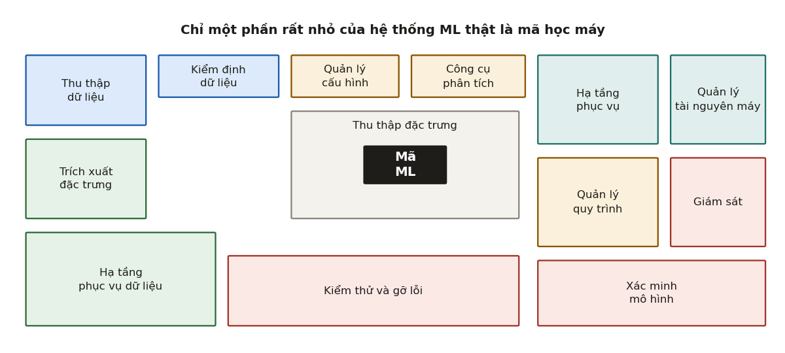
1.3. Nguyên lý CACE#
Khái niệm quan trọng nhất trong bài báo, và cũng là thứ hay bị hỏi nhất:
CACE — Changing Anything Changes Everything. Đổi bất cứ thứ gì là đổi tất cả.
Lập luận rất gọn. Một mô hình học được một hàm từ toàn bộ các đầu vào cùng lúc. Thêm một đặc trưng , bỏ một đặc trưng , hay chỉ đổi cách lấy mẫu — trọng số của mọi đặc trưng còn lại đều đổi theo. Không có đầu vào nào thực sự độc lập với đầu vào nào.
Bài báo nói rõ CACE không chỉ áp cho tín hiệu đầu vào mà còn cho siêu tham số, thiết lập học, cách lấy mẫu, ngưỡng hội tụ, và về cơ bản là mọi thứ có thể tinh chỉnh được.
Hệ quả thực hành, và đây là chỗ phân biệt người đã làm thật với người mới đọc:
- Không tồn tại "thay đổi nhỏ và cô lập" trong một mô hình. Mọi thay đổi đều phải đánh giá lại toàn bộ, không thể lý luận cục bộ như sửa một hàm trong phần mềm thường.
- Cách giảm nhẹ mà bài báo nêu là cô lập mô hình và phục vụ theo tổ hợp (ensemble), khi bài toán tách được thành các bài toán con độc lập một cách tự nhiên. Nhưng bài báo cũng thành thật: cách này chỉ hợp khi bài toán con thực sự rời nhau.
1.4. Các dạng nợ có tên#
Nhớ được danh sách này là nhớ được phần lớn ngữ pháp của nghề. Chúng được nhóm theo nơi nợ phát sinh.
a) Mô hình phức tạp làm xói mòn ranh giới trừu tượng
| Tên | Nội dung |
|---|---|
| Entanglement (rối) | Chính là CACE ở trên. |
| Correction cascade (thác hiệu chỉnh) | Có mô hình cho bài toán A; cần giải bài toán A' hơi khác, ta học một mô hình nhỏ nhận đầu ra của làm đầu vào rồi học phần hiệu chỉnh. Nhanh, nhưng vừa tạo ra một phụ thuộc hệ thống mới vào , và cải thiện từ nay trở đi trở nên rất đắt. |
| Undeclared consumer (người dùng không khai báo) | Đầu ra mô hình được ghi ra đâu đó mà không có kiểm soát truy cập, rồi một hệ thống khác lặng lẽ dùng nó làm đầu vào. Trong công nghệ phần mềm cổ điển gọi là visibility debt. Nguy hiểm vì nó tạo ra ràng buộc chặt mà không ai nhìn thấy. |
b) Phụ thuộc dữ liệu đắt hơn phụ thuộc mã
Bài báo nói thẳng: phụ thuộc mã thì trình biên dịch và trình liên kết phát hiện được bằng phân tích tĩnh; phụ thuộc dữ liệu thì không có công cụ tương đương, nên rất dễ tích tụ những chuỗi phụ thuộc khổng lồ mà không ai gỡ nổi.
-
Unstable data dependency (phụ thuộc dữ liệu không ổn định): tín hiệu đầu vào lấy từ hệ thống khác, mà hệ thống ấy lại thay đổi hành vi theo thời gian — ví dụ nó cũng là một mô hình ML tự cập nhật, hoặc là một bảng tra phụ thuộc dữ liệu. Cách chữa là đóng băng phiên bản tín hiệu, nhưng đóng băng cũng có giá của nó: giá trị cũ dần và phải nuôi nhiều phiên bản song song.
-
Underutilized data dependency (phụ thuộc dữ liệu ít dùng): đặc trưng gần như không đóng góp gì nhưng vẫn nằm trong mô hình, khiến hệ thống dễ vỡ một cách không cần thiết. Bài báo liệt kê bốn đường vào:
- Legacy feature — đặc trưng đưa vào từ sớm, sau này bị các đặc trưng mới làm cho thừa mà không ai nhận ra.
- Bundled feature — một nhóm đặc trưng được đánh giá chung rồi đưa vào cả gói vì áp lực thời hạn, trong đó có cái vô dụng.
- ε-feature — đặc trưng làm độ chính xác tăng một chút xíu nhưng chi phí phức tạp thì lớn.
- Correlated feature — hai đặc trưng tương quan mạnh, một cái mới là nhân quả; mô hình chia đều công cho cả hai hoặc chọn nhầm cái không nhân quả, và hệ thống thành giòn khi thế giới đổi.
Cách phát hiện mà bài báo đề xuất rất thực dụng: đánh giá bỏ-từng-đặc-trưng (leave-one-feature-out) định kỳ.
c) Nợ ở mức hệ thống
| Tên | Nội dung |
|---|---|
| Glue code | Mã keo để nối các gói đa dụng lại với nhau. Đây là chỗ có con số nổi tiếng nhất của bài báo: "một hệ thống trưởng thành rốt cuộc có thể chỉ gồm nhiều nhất 5% mã học máy và ít nhất 95% mã keo". |
| Pipeline jungle (rừng rậm pipeline) | Trường hợp riêng của glue code, mọc lên ở khâu chuẩn bị dữ liệu: cào, ghép, lấy mẫu chồng chất theo năm tháng, đầy tệp trung gian. |
| Dead experimental codepath | Nhánh điều kiện để thử nghiệm nằm lẫn trong mã sản xuất. Mỗi nhánh riêng lẻ thì rẻ; cộng dồn thì thành nợ lớn. |
| Abstraction debt | Ngành ML chưa có một trừu tượng nào đạt tới mức thành công của cơ sở dữ liệu quan hệ. Câu hỏi "giao diện đúng để mô tả một luồng dữ liệu, một mô hình, một dự đoán là gì?" vẫn chưa có câu trả lời chuẩn. |
| Configuration debt | Hệ thống lớn nào cũng có rất nhiều tuỳ chọn cấu hình, và cả nhà nghiên cứu lẫn kỹ sư đều coi cấu hình là chuyện phụ. Trong khi một dòng cấu hình sai có sức phá hoại ngang một dòng mã sai. |
| Reproducibility debt | Chạy lại thí nghiệm và ra kết quả tương tự là yêu cầu khoa học cơ bản, nhưng thuật toán ngẫu nhiên, tính bất định của huấn luyện song song, phụ thuộc điều kiện khởi tạo và tương tác với thế giới bên ngoài làm việc đó rất khó. |
| Cultural debt | Ranh giới cứng giữa "nghiên cứu" và "kỹ thuật" là có hại. Đội cần thưởng cho việc xoá bớt đặc trưng, giảm độ phức tạp, cải thiện tính lặp lại và giám sát ngang với thưởng cho việc tăng độ chính xác. |
Ba "mùi" đáng ngờ mà bài báo đặt tên, rất hay được hỏi: plain-old-data type smell (thông tin giàu ngữ nghĩa của ML bị nhét vào float và int trần, nên một tham số không tự biết mình là log-odds hay là ngưỡng quyết định), multiple-language smell (mỗi mảnh viết một ngôn ngữ vì tiện thư viện, làm kiểm thử và bàn giao đắt lên), và prototype smell (phải dựa vào môi trường prototype thường xuyên là dấu hiệu hệ thống thật đang giòn).
1.5. Đọc con số 5% cho đúng#
Con số "5% mã ML, 95% mã keo" bị trích sai rất nhiều. Ba điểm cần nói đúng:
- Nó là phát biểu về mã keo khi tái sử dụng các gói đa dụng, nằm trong mục Glue Code — không phải chú thích của Hình 1.
- Bài báo diễn đạt có biên: nhiều nhất 5% và ít nhất 95%. Đó là một nhận định định tính có kèm độ lớn, không phải một phép đo trên một mẫu hệ thống.
- Kết luận bài báo rút ra từ đó cũng thường bị bỏ mất: vì tỉ lệ ấy, viết một lời giải gọn và thuần nội bộ đôi khi rẻ hơn là tái sử dụng một gói đa dụng, và chiến lược chống glue code là bọc các gói hộp đen sau một API chung.
Nói được cả ba ý này là dấu hiệu rõ nhất của người đã đọc bài báo chứ không chỉ nghe kể lại.
1.6. Cái giá phải trả cho việc không có MLOps#
Đến đây có thể trả lời câu hỏi mở đầu. Mô hình AUC 0,94 ấy chết vì một trong các lý do sau, tất cả đều đã có tên ở trên:
- một nhà cung cấp dữ liệu thượng nguồn đổi đơn vị từ đồng sang nghìn đồng (unstable data dependency, không ai giám sát up-stream producer);
- một đặc trưng được tính khác nhau giữa lúc huấn luyện và lúc phục vụ (training–serving skew, Chương 4);
- thế giới đã đổi và không ai đo (dịch chuyển phân phối, Chương 9);
- một ngưỡng quyết định đặt tay từ năm ngoái vẫn còn đó sau khi mô hình đã huấn luyện lại (fixed threshold in dynamic system, Mục 10.6);
- chính mô hình làm hỏng dữ liệu huấn luyện của lần sau (feedback loop, Chương 12).
Toàn bộ phần còn lại của tài liệu là cách phát hiện và chặn từng nguyên nhân ấy.
2. Vòng đời, ba chữ V và ba mức tự động hoá#
2.1. Vòng đời là vòng lặp#
Cách vẽ quen thuộc "thu thập dữ liệu → huấn luyện → triển khai" là một đường thẳng, và chính vì thế nó sai. Vòng đời thật có ít nhất ba đường quay lại.
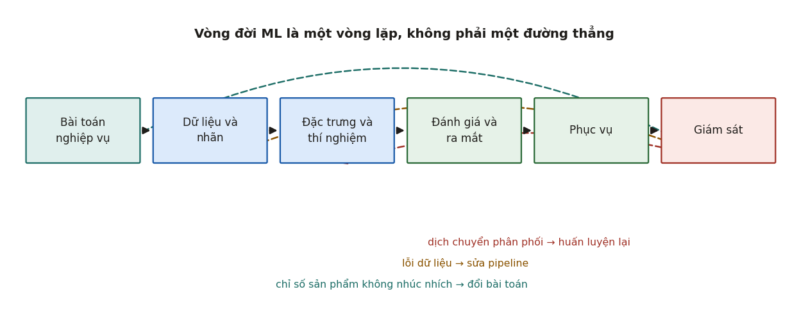
Nghiên cứu phỏng vấn Operationalizing Machine Learning: An Interview Study (Shankar và cộng sự, 2022) phỏng vấn 18 kỹ sư ML đang làm sản xuất và gom công việc của họ thành bốn nhiệm vụ:
- Thu thập và gán nhãn dữ liệu — tìm nguồn, kéo về kho tập trung, làm sạch, gán nhãn (thuê ngoài hoặc đội nội bộ).
- Tạo đặc trưng và thí nghiệm mô hình — cải thiện chỉ số ML; thí nghiệm có thể hướng dữ liệu hoặc hướng mô hình.
- Đánh giá và triển khai mô hình.
- Giám sát và phản ứng khi chất lượng tụt trong sản xuất.
2.2. Ba chữ V#
Cùng nghiên cứu ấy rút ra ba biến quyết định thành bại của một lần triển khai. Đây là khung tóm tắt gọn nhất mà tài liệu này biết, và rất đáng thuộc:
| Chữ V | Nội dung | Vì sao nó quyết định |
|---|---|---|
| Velocity (tốc độ vòng lặp) | Đi từ một ý tưởng mới tới một mô hình đã huấn luyện trong vòng một ngày. | ML mang bản chất thí nghiệm, nên số ý tưởng thử được trên một đơn vị thời gian chính là năng suất. |
| Validation (kiểm định sớm) | Thử, loại ý tưởng tồi và giám sát pipeline càng sớm càng tốt. | Lỗi càng để người dùng nhìn thấy thì càng đắt. |
| Versioning (quản phiên bản) | Lưu và quản nhiều phiên bản mô hình và dữ liệu cùng lúc. | Không thể lường trước mọi lỗi, nên phải quay lui được. |
Một câu trích trong bài báo tóm đúng cả ba: "Chủ đề chung khi chúng tôi trưởng thành lên là: làm sao kiểm định được nhiều hơn ở giai đoạn sớm hơn, để vòng lặp nhanh hơn?"
Chú ý điểm tinh tế: Velocity và Validation kéo nhau về hai phía. Kiểm định thêm thì chậm lại. Nhưng bài báo chỉ ra chúng cũng cộng hưởng: nếu ý tưởng tồi bị loại ở giai đoạn sớm thì tổng tốc độ lại tăng. Nghệ thuật nằm ở chỗ đặt cửa kiểm định ở đâu, chứ không phải đặt nhiều hay ít.
2.3. Ba mức tự động hoá#
Kiến trúc tham chiếu được trích dẫn nhiều nhất là tài liệu MLOps: Continuous delivery and automation pipelines in machine learning của Google Cloud. Nó chia độ trưởng thành thành ba mức.
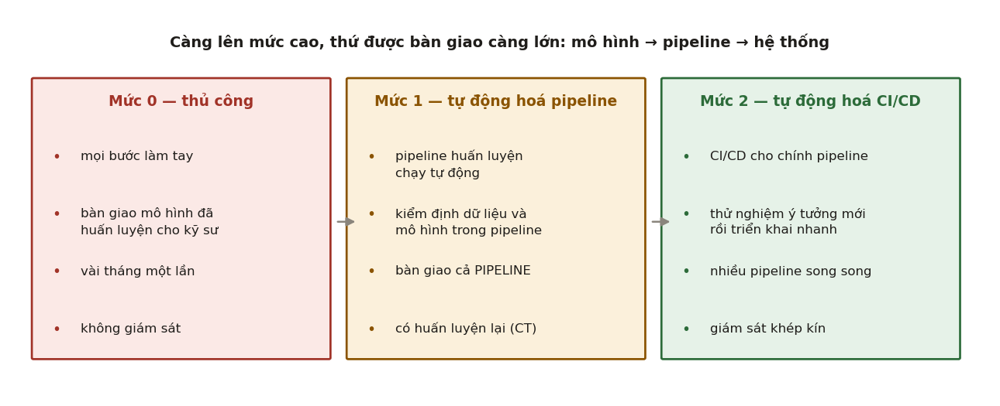
Mức 0 — quy trình thủ công. Mọi bước làm tay: phân tích dữ liệu, chuẩn bị dữ liệu, huấn luyện, kiểm định. Nhà khoa học dữ liệu bàn giao mô hình đã huấn luyện cho kỹ sư đem triển khai. Hai bên làm việc tách rời nhau. Phát hành thưa thớt và không giám sát hiệu năng.
Mức 1 — tự động hoá pipeline ML. Trọng tâm là huấn luyện liên tục (CT): tự động hoá cả pipeline huấn luyện. Thành phần được đóng gói, tái sử dụng được, có bước kiểm định dữ liệu và kiểm định mô hình tự động. Thứ được triển khai không còn là mô hình mà là toàn bộ pipeline huấn luyện.
Mức 2 — tự động hoá CI/CD. Có hệ thống CI/CD mạnh cho chính pipeline, để thử ý tưởng mới và đưa ra sản xuất nhanh. Tài liệu Google đặt tên sáu giai đoạn:
- Phát triển và thí nghiệm
- Tích hợp liên tục cho pipeline
- Bàn giao liên tục cho pipeline
- Kích hoạt tự động
- Bàn giao liên tục cho mô hình
- Giám sát
Tám bước của pipeline ML mà tài liệu ấy liệt kê — đáng thuộc vì rất hay được hỏi dưới dạng "hãy mô tả pipeline của bạn": trích xuất dữ liệu → phân tích dữ liệu → chuẩn bị dữ liệu → huấn luyện → đánh giá → kiểm định mô hình → phục vụ → giám sát.
2.4. CT khác gì CI/CD#
Đây là câu hỏi phỏng vấn kinh điển, và câu trả lời ngắn là:
CI/CD lo việc mã thay đổi. CT lo việc dữ liệu thay đổi.
Trong phần mềm thường, hệ thống chỉ đổi khi có người sửa mã. Trong ML có thêm một nguồn thay đổi mà không ai chạm vào repo cả: thế giới. Vì vậy ML có thêm một chữ C thứ ba — Continuous Training — tức tự động huấn luyện lại và phục vụ lại, kích hoạt bởi dữ liệu mới, bởi chất lượng tụt, hoặc bởi dịch chuyển phân phối (Chương 11).
Một cách nói khác giúp nhớ: trong CI/CD của phần mềm thường, tạo tác (artifact) là mã đã biên dịch. Trong ML, tạo tác gồm mã + dữ liệu + mô hình, và ba thứ này có nhịp thay đổi khác nhau. Đó là toàn bộ lý do MLOps tồn tại như một nghề riêng.
2.5. Bốn thói xấu có tên#
Shankar và cộng sự quan sát được bốn anti-pattern, đều đáng nhận mặt:
| Thói xấu | Mô tả | Vì sao nó hại |
|---|---|---|
| Industry–Classroom Mismatch | Kiến thức học ở trường không khớp với lỗi gặp ở chỗ làm; người mới phải học lại bằng cách vấp. | Có thể chữa bằng tài liệu và quy trình, không nhất thiết phải trả giá bằng sự cố. |
| Keeping GPUs Warm | "Giữ cho GPU luôn ấm": chạy càng nhiều thí nghiệm càng tốt để không phí tài nguyên. | Nhiều thí nghiệm không có giả thuyết thì chỉ sinh ra nhiễu và nhiều phiên bản phải quản. |
| Retrofitting an Explanation | Thấy kết quả tốt, đưa ra sản xuất, rồi mới đi tìm lý do vì sao nó tốt. | Lời giải thích gắn sau thường sai, và nó dẫn hướng sai cho các quyết định tiếp theo. |
| Undocumented Tribal Knowledge | Tri thức về pipeline chỉ nằm trong đầu vài người. | Tốc độ cao sinh ra rất nhiều phiên bản, tài liệu không theo kịp; người đó nghỉ việc là mất. |
Anti-pattern thứ hai đáng nói thêm. Nó nghe như một đức tính (tận dụng tài nguyên) nhưng thực ra là một sự nhầm lẫn về thứ cần tối ưu: cái khan hiếm không phải GPU, mà là số giả thuyết tốt và thời gian của con người để đọc kết quả.
3. Dữ liệu: hợp đồng, kiểm định và phổ lỗi#
3.1. Vì sao chương này đứng trước chương mô hình#
Một quan sát nhất quán trong nghiên cứu phỏng vấn: kỹ sư ML giỏi lặp trên dữ liệu chứ không nhất thiết lặp trên mô hình. Lý do đơn giản: với cùng một lượng công sức, sửa dữ liệu thường cho mức cải thiện lớn hơn đổi kiến trúc, và quan trọng hơn — lỗi dữ liệu là loại lỗi im lặng, còn lỗi mô hình thì hiện ra trên chỉ số.
3.2. Phổ lỗi dữ liệu: cứng → mềm → dịch chuyển#
Đây là khung phân loại hữu dụng nhất mà tài liệu này biết, lấy từ Shankar và cộng sự. Nó giải thích vì sao "kiểm tra dữ liệu" không phải một việc mà là ba việc khác nhau.
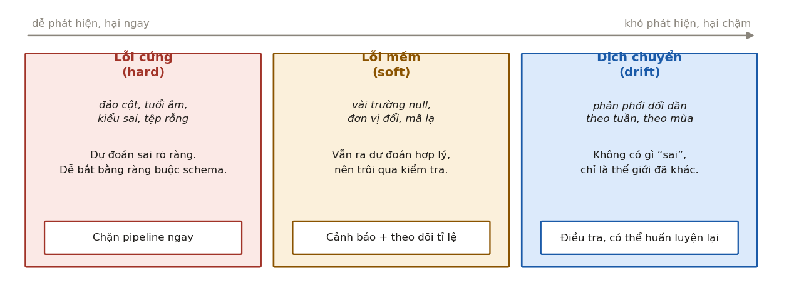
| Loại | Ví dụ | Đặc điểm | Phản ứng đúng |
|---|---|---|---|
| Lỗi cứng (hard) | đảo hai cột, tuổi âm, kiểu sai, tệp rỗng | Cho dự đoán sai rõ ràng. Vi phạm ràng buộc kiểm tra được. | Chặn pipeline. Thà không có dự đoán còn hơn có dự đoán rác. |
| Lỗi mềm (soft) | vài trường null, đơn vị đổi, xuất hiện mã danh mục lạ | Vẫn ra dự đoán trông hợp lý, nên trôi qua mọi kiểm tra. Khó bắt và khó định lượng. | Cảnh báo và theo dõi tỉ lệ, không chặn. |
| Dịch chuyển (drift) | phân phối đổi dần theo tuần, theo mùa | Không có gì "sai"; thế giới đã khác. Diễn ra chậm. | Điều tra, có thể huấn luyện lại (Chương 9, 11). |
Bài báo ghi nhận hai nỗi đau cụ thể quanh khung này, và cả hai đều nên nói ra khi phỏng vấn vì chúng chứng tỏ bạn hiểu vấn đề vận hành chứ không chỉ vấn đề kỹ thuật:
- Bắt người ta tự tay đặt ràng buộc chất lượng dữ liệu là không bền. Người biết vì sao ngưỡng ấy là 0,3 sẽ nghỉ việc, và ngưỡng ấy ở lại.
- Nỗi đau được nhắc nhiều nhất là báo động giả — cảnh báo nổ trong khi chất lượng ML vẫn ổn. Hậu quả của báo động giả không phải là phiền, mà là đội ngừng tin vào cảnh báo, và lúc có sự cố thật thì không ai buồn nhìn.
3.3. Hợp đồng dữ liệu#
Cách chữa gốc cho lỗi cứng là biến giả định ngầm thành hợp đồng dữ liệu (data contract) có thể kiểm tra bằng máy. Một hợp đồng tối thiểu gồm bốn tầng:
# Tầng 1 — schema: tên cột, kiểu, cột nào được phép null
schema = {
"user_id": {"type": "int64", "nullable": False},
"amount_vnd": {"type": "float64", "nullable": False},
"country": {"type": "category","nullable": False},
"event_time": {"type": "datetime","nullable": False},
}
# Tầng 2 — miền giá trị: ràng buộc trên từng giá trị
domain = {
"amount_vnd": {"min": 0, "max": 5e9},
"country": {"allowed": {"VN", "SG", "TH", "ID"}},
}
# Tầng 3 — thống kê: ràng buộc trên phân phối của cả lô
batch_stats = {
"amount_vnd": {"null_rate_max": 0.001, "mean_shift_max_sigma": 3},
"country": {"new_category_rate_max": 0.005},
}
# Tầng 4 — quan hệ giữa các cột và giữa các bảng
invariants = [
"event_time <= ingest_time", # không có sự kiện từ tương lai
"refund_amount <= amount_vnd",
"count(rows) between 0.7*d7_median and 1.4*d7_median", # lô không hụt, không phình
]
Ba điều đáng nói về thiết kế này:
- Tầng 1 và 2 bắt lỗi cứng, tầng 3 và 4 bắt lỗi mềm. Trộn chúng vào một cơ chế là nguồn gốc của báo động giả.
- Hợp đồng phải được sinh ra từ dữ liệu chứ không chỉ viết tay. Cách làm chuẩn là suy ra schema và khoảng giá trị từ một tập tham chiếu đã được duyệt, rồi cho người xem lại — như vậy hợp đồng không chết theo người viết ra nó.
- Ràng buộc "không có sự kiện từ tương lai" ở tầng 4 nhìn thì tầm thường, nhưng nó chính là tuyến phòng thủ đầu tiên chống rò rỉ nhãn — chủ đề của Chương 4.
3.4. Kiểm định ở cả đầu vào lẫn đầu ra#
Một thực hành được nhắc đi nhắc lại trong nghiên cứu phỏng vấn: kiểm định dữ liệu đi vào và đi ra khỏi mỗi pipeline. Lý do là một pipeline nhiều bước có tính chất khó chịu: bước thứ ba hỏng thì bước thứ năm vẫn chạy, và chỉ đến đầu ra cuối cùng mới thấy con số lạ — lúc đó đã mất hàng giờ để lần ngược.
Nguyên tắc chung mượn từ hệ phân tán: fail fast, fail loud, fail at the boundary — hỏng sớm, hỏng ồn ào, và hỏng ở đúng ranh giới nơi trách nhiệm đổi chủ.
3.5. Nhãn: nguồn lỗi bị đánh giá thấp nhất#
Ba loại vấn đề về nhãn, xếp theo mức độ hay bị bỏ qua:
- Độ trễ nhãn (label lag). Khoảng cách giữa lúc dự đoán và lúc biết đáp án thật. Với dự đoán click là vài phút; với dự đoán vỡ nợ tín dụng là hàng tháng tới hàng năm. Độ trễ nhãn quyết định gần như mọi thứ khác: nó quyết định bạn giám sát được gì (Chương 10) và huấn luyện lại được nhanh đến đâu (Chương 11).
- Nhãn nhiễu và nhãn bất đồng. Cần đo mức đồng thuận giữa người gán nhãn và coi nó là trần trên của độ chính xác khả dĩ. Một mô hình đạt 95% trong khi hai người gán nhãn chỉ đồng ý với nhau 90% là một mô hình đáng nghi, không phải đáng mừng.
- Nhãn bị chính hệ thống làm lệch. Nếu nhãn lấy từ hành vi người dùng trên kết quả do mô hình đưa ra, thì nhãn ấy không phải quan sát khách quan về thế giới — đó là Chương 12.
3.6. Phiên bản hoá dữ liệu#
Chữ V thứ ba ở Mục 2.2 áp cho dữ liệu chứ không chỉ cho mô hình. Câu hỏi cần trả lời được bất cứ lúc nào là: mô hình đang chạy trong sản xuất được huấn luyện từ chính xác tập dữ liệu nào?
Có ba mức trả lời, chi phí tăng dần:
| Mức | Cách làm | Trả lời được câu hỏi gì |
|---|---|---|
| Yếu | Ghi lại đường dẫn và dấu thời gian | "Nó ở thư mục đó, ngày đó" — không dựng lại được nếu thư mục bị ghi đè |
| Vừa | Lưu hash nội dung của tập dữ liệu cùng với mô hình | "Đúng tập này hay không" — phát hiện được thay đổi, nhưng chưa dựng lại được |
| Mạnh | Lưu trữ bất biến, chỉ thêm (immutable, append-only) + truy vết dòng dõi (lineage) | Dựng lại được đúng tập huấn luyện của bất kỳ mô hình nào trong quá khứ |
Mức mạnh nghe đắt, nhưng nó là điều kiện cần để điều tra sự cố. Khi mô hình hành xử lạ, câu hỏi đầu tiên luôn là "dữ liệu huấn luyện có gì bất thường không" — và nếu không dựng lại được tập ấy thì cuộc điều tra dừng ngay ở câu hỏi đầu tiên.
4. Đặc trưng: kho đặc trưng và tính đúng theo thời điểm#
4.1. Hai nỗi đau sinh ra kho đặc trưng#
Kho đặc trưng (feature store) thường được giới thiệu như một loại cơ sở dữ liệu. Cách hiểu ấy làm người ta trả lời phỏng vấn rất nông. Nó ra đời để chữa hai nỗi đau cụ thể, và nếu bạn không có hai nỗi đau ấy thì bạn không cần nó.
Nỗi đau 1 — lệch giữa huấn luyện và phục vụ (training–serving skew). Lúc huấn luyện, đặc trưng "tổng chi tiêu 30 ngày qua" được tính bằng một truy vấn SQL trên kho dữ liệu. Lúc phục vụ, nó được tính lại bằng Python trong một dịch vụ, vì truy vấn kho dữ liệu quá chậm. Hai đoạn mã ấy do hai người viết, ở hai thời điểm, và chúng không bao giờ khớp nhau hoàn toàn: một bên tính 30 ngày theo lịch, bên kia theo 720 giờ; một bên loại giao dịch hoàn tiền, bên kia không.
Tài liệu Google Cloud định nghĩa thẳng: training–serving skew xảy ra khi đặc trưng cần cho việc phục vụ độ trễ thấp trong sản xuất khác với đặc trưng dùng lúc huấn luyện, khiến chất lượng mô hình tụt sau khi triển khai.
Điểm khó chịu nhất của loại lỗi này: nó không tạo ra lỗi nào. Mô hình vẫn chạy. Chỉ là nó nhận đầu vào hơi khác thứ nó đã học, và mất vài điểm phần trăm mà không ai biết vì sao.
Nỗi đau 2 — rò rỉ nhãn khi dựng tập huấn luyện. Đây là nội dung mục tiếp theo, và là khái niệm quan trọng nhất của cả chương.
4.2. Tính đúng theo thời điểm#
Tính đúng theo thời điểm (point-in-time correctness). Với mỗi dòng huấn luyện có thời điểm cần dự đoán , giá trị đặc trưng dùng cho dòng ấy phải là giá trị quan sát được tại đúng , chứ không phải giá trị của hôm nay.
Nghe hiển nhiên. Vi phạm nó thì cực kỳ dễ, và đây là cách nó xảy ra.
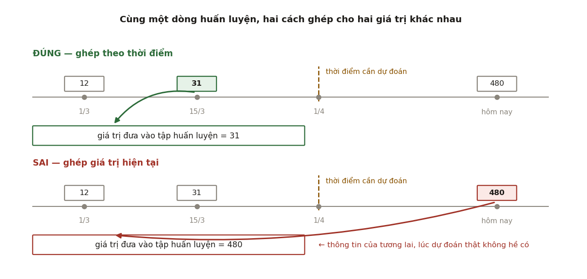
Viết bằng SQL thì vi phạm trông như thế này — và nó là một trong những câu SQL vô hại nhất mà bạn từng thấy:
-- SAI: lấy giá trị đặc trưng HIỆN TẠI cho mọi dòng lịch sử
SELECT l.user_id, l.event_time, l.label,
f.total_orders -- giá trị của hôm nay!
FROM labels l
JOIN user_features f ON f.user_id = l.user_id;
Bản đúng phải ghép thêm theo trục thời gian — mỗi dòng lấy bản ghi đặc trưng mới nhất nhưng không muộn hơn thời điểm dự đoán:
-- ĐÚNG: point-in-time join (as-of join)
SELECT l.user_id, l.event_time, l.label, f.total_orders
FROM labels l
LEFT JOIN LATERAL (
SELECT total_orders
FROM user_features_history h
WHERE h.user_id = l.user_id
AND h.valid_from <= l.event_time -- chỉ nhìn về quá khứ
ORDER BY h.valid_from DESC
LIMIT 1
) f ON TRUE;
Vì sao vi phạm này nguy hiểm hơn mọi lỗi khác trong tài liệu. Nó không làm chỉ số xấu đi — nó làm chỉ số đẹp lên. Mô hình học được rằng "khách có 480 đơn hàng thì không rời bỏ", trong khi con số 480 chỉ tồn tại vì khách ấy đã ở lại. Offline bạn thấy AUC 0,94; online bạn thấy một mô hình vô dụng. Và vì offline đẹp nên không ai nghi ngờ gì cho tới khi đã triển khai.
Nghiên cứu phỏng vấn xếp rò rỉ dữ liệu là ví dụ đầu tiên của nỗi đau "lệch giữa môi trường phát triển và môi trường sản xuất", với đúng định nghĩa: giả định lúc huấn luyện rằng có quyền truy cập thứ dữ liệu mà lúc phục vụ không hề có — và ghi nhận rằng lỗi này thường chỉ bị phát hiện sau khi mô hình đã triển khai và đã ra vài dự đoán sai.
4.3. Ba cách một đặc trưng rò rỉ tương lai#
Rò rỉ không chỉ đến từ phép ghép sai. Ba đường vào, xếp theo mức độ khó phát hiện:
- Rò rỉ theo thời gian — như trên. Chữa bằng point-in-time join và bằng ràng buộc
event_time <= feature_valid_fromở Mục 3.3. - Rò rỉ theo thực thể — cùng một người dùng xuất hiện ở cả tập huấn luyện lẫn tập kiểm tra khi chia ngẫu nhiên. Chữa bằng chia theo nhóm (group split) theo thực thể, và với dữ liệu có thời gian thì luôn chia theo thời gian chứ không chia ngẫu nhiên.
- Rò rỉ qua đặc trưng thay mặt cho nhãn (proxy leakage) — đặc trưng "số lần gọi tổng đài chăm sóc sau sự cố" để dự đoán "khách có gặp sự cố không". Về thời gian thì hợp lệ, nhưng nó là hệ quả của nhãn chứ không phải nguyên nhân. Đây là loại khó nhất vì không có kiểm tra máy nào bắt được; chỉ có cách hỏi với từng đặc trưng: "tại thời điểm cần dự đoán, giá trị này đã tồn tại chưa, và nó có tồn tại vì nhãn hay không?"
4.4. Kho đặc trưng giải quyết chuyện gì#
Bây giờ mới nên nói tới công cụ. Kho đặc trưng là một lớp hạ tầng gồm hai kho và một sổ đăng ký:
| Thành phần | Nội dung | Đặc tính cần |
|---|---|---|
| Kho ngoại tuyến (offline store) | toàn bộ lịch sử giá trị đặc trưng, có valid_from |
thông lượng cao, chịu được truy vấn lớn, hỗ trợ point-in-time join |
| Kho trực tuyến (online store) | chỉ giá trị mới nhất của mỗi thực thể | độ trễ thấp (thường dưới 10 ms), tra theo khoá |
| Sổ đăng ký (registry) | một định nghĩa duy nhất cho mỗi đặc trưng | là nguồn sự thật cho cả hai kho |
Sổ đăng ký mới là phần quan trọng. Nó chữa nỗi đau 1 bằng cách buộc hai đường huấn luyện và phục vụ dùng chung một định nghĩa thay vì hai bản cài đặt song song. Kho ngoại tuyến chữa nỗi đau 2 bằng cách giữ lịch sử để ghép được theo thời điểm.
Điều cần nói rõ: kho đặc trưng không tự động xoá bỏ skew. Nó chỉ tạo điều kiện. Nếu đội vẫn viết một đường tính riêng cho phục vụ vì lý do độ trễ, skew vẫn quay lại. Đây là chỗ các công cụ khác nhau: có công cụ chỉ cung cấp hạ tầng và để bạn tự giữ kỷ luật, có công cụ ép một định nghĩa duy nhất bằng thiết kế.
4.5. Khi nào không cần kho đặc trưng#
Một câu trả lời phỏng vấn tốt luôn có phần này. Kho đặc trưng là hạ tầng nặng; nó xứng đáng khi:
- có nhiều mô hình dùng chung đặc trưng (nếu chỉ một mô hình, lợi ích tái sử dụng bằng 0);
- có phục vụ trực tuyến độ trễ thấp (nếu chỉ chấm điểm theo lô hằng đêm, dùng thẳng kho dữ liệu là đủ và đúng hơn);
- đặc trưng phụ thuộc thời gian và cập nhật thường xuyên (nếu đặc trưng tĩnh, point-in-time là chuyện không tồn tại).
Thiếu cả ba điều kiện ấy thì một bảng trong kho dữ liệu cộng với kỷ luật viết một hàm biến đổi dùng chung sẽ rẻ hơn nhiều và đạt cùng mục tiêu.
5. Thí nghiệm lặp lại được#
5.1. Lặp lại được nghĩa là gì#
Ba mức, hay bị gọi lẫn lộn:
| Mức | Định nghĩa | Ai cần |
|---|---|---|
| Tái lập (reproducibility) | chạy lại cùng mã, cùng dữ liệu, cùng môi trường cho cùng kết quả | bắt buộc, cho điều tra sự cố |
| Tái tạo (replicability) | người khác, môi trường khác, làm lại được kết quả tương tự | cần cho hợp tác và kiểm toán |
| Tính bền (robustness) | đổi hạt giống, đổi phân chia dữ liệu mà kết luận không đổi | cần trước khi tin vào một cải thiện |
Sculley và cộng sự gọi thiếu hụt ở mức 1 là reproducibility debt, và nêu đúng bốn nguyên nhân: thuật toán ngẫu nhiên, tính bất định vốn có của huấn luyện song song, phụ thuộc điều kiện khởi tạo, và tương tác với thế giới bên ngoài.
5.2. Sáu thứ phải ghim lại#
Để đạt mức 1, phải ghim đủ sáu thứ. Thiếu một là đủ hỏng:
# 1. Hạt giống — cho MỌI nguồn ngẫu nhiên, không chỉ một
random.seed(S); np.random.seed(S); torch.manual_seed(S)
torch.cuda.manual_seed_all(S)
# 2. Tính tất định của phép toán (đổi lại thì chậm hơn)
torch.use_deterministic_algorithms(True)
torch.backends.cudnn.benchmark = False # tắt chọn thuật toán theo thời gian chạy
# 3. Thứ tự dữ liệu — worker cũng phải có hạt giống
DataLoader(ds, shuffle=True, num_workers=4,
worker_init_fn=lambda w: np.random.seed(S + w),
generator=torch.Generator().manual_seed(S))
# 4. Phiên bản: mã (commit), dữ liệu (hash), thư viện (lockfile), ảnh container (digest)
# 5. Cấu hình: một tệp duy nhất, được ghi lại cùng kết quả
# 6. Phần cứng: số GPU và kiểu GPU (đổi số GPU là đổi kích thước lô hiệu dụng)
Ba điểm hay bị bỏ sót, và đều là câu hỏi phỏng vấn tốt:
- Hạt giống của worker.
num_workers > 0mà không đặtworker_init_fnthì thứ tự tăng cường dữ liệu khác nhau giữa các lần chạy dù đãmanual_seed. - Số GPU là một siêu tham số. Đổi từ 4 sang 8 GPU mà giữ nguyên
batch_sizemỗi GPU là đã nhân đôi kích thước lô hiệu dụng, tức đổi cả bài toán tối ưu. cudnn.benchmark = Truelà không tất định vì nó chọn thuật toán tích chập theo đo thời gian lúc chạy, và kết quả đo phụ thuộc tải máy.
5.3. Theo dõi thí nghiệm: ghi cái gì#
Nguyên tắc: ghi đủ để dựng lại thí nghiệm, không chỉ đủ để so sánh thí nghiệm. Tối thiểu bốn nhóm:
- Đầu vào: commit mã, hash dữ liệu, tệp cấu hình đầy đủ, ảnh container.
- Quá trình: đường cong mất mát, learning rate theo bước, tài nguyên tiêu thụ, thời gian chạy.
- Đầu ra: chỉ số theo lát cắt (Mục 6.3), ma trận nhầm lẫn, tạo tác mô hình kèm hash.
- Ngữ cảnh: ai chạy, khi nào, vì sao — giả thuyết đang kiểm chứng là gì.
Nhóm 4 là nhóm hay bị bỏ nhất và cũng là thuốc giải cho anti-pattern Retrofitting an Explanation ở Mục 2.5: nếu giả thuyết được ghi lại trước khi chạy, thì không thể gắn lời giải thích vào sau.
5.4. Sổ đăng ký mô hình#
Sổ đăng ký (model registry) là nơi một tạo tác mô hình có danh tính và vòng đời. Tối thiểu nó phải trả lời được:
- mô hình này huấn luyện từ commit nào, dữ liệu nào, cấu hình nào;
- nó đã qua những cửa kiểm định nào, kết quả ra sao;
- nó đang ở trạng thái nào (
staging/production/archived), ai duyệt; - phiên bản nào đang thực sự chạy, và quay lui về phiên bản nào.
Câu cuối là lý do tồn tại của sổ đăng ký. Chữ V thứ ba — Versioning — tồn tại để quay lui được, và nghiên cứu phỏng vấn ghi nhận một thực hành đi kèm rất đáng nhớ: giữ các phiên bản cũ làm mô hình dự phòng, và duy trì các tầng heuristic bên dưới để khi mô hình hỏng thì hệ thống rơi về một hành vi tuy đơn giản nhưng đoán trước được, thay vì rơi về hư vô.
6. Đánh giá cho sản xuất#
6.1. Vì sao một con số là không đủ#
Một mô hình được tóm bằng một con số duy nhất — "độ chính xác 92%" — là một mô hình chưa được đánh giá. Ba lý do, đi từ dễ tới khó.
6.2. Chỉ số ngoại tuyến phải gắn với chỉ số sản phẩm#
Thực hành được nghiên cứu phỏng vấn nhấn mạnh: chỉ số đánh giá ML phải gắn với chỉ số sản phẩm. Cùng ý đó, tiêu chí Model 2 của ML Test Score (Mục 6.5) viết thẳng: chỉ số đại diện ngoại tuyến phải tương quan với tác động thật.
Mối quan hệ giữa hai loại chỉ số hầu như không bao giờ tuyến tính:
| Chỉ số ML | Chỉ số sản phẩm tương ứng | Quan hệ điển hình |
|---|---|---|
| AUC của mô hình gian lận | tiền thiệt hại chặn được | bão hoà — sau một mức, AUC tăng mà tiền không đổi vì đội điều tra đã hết công suất |
| NDCG của xếp hạng | thời gian người dùng ở lại | có thể nghịch — xếp hạng "đúng" quá có thể giảm khám phá |
| Perplexity của mô hình ngôn ngữ | tỉ lệ người dùng chấp nhận câu trả lời | tương quan yếu, và yếu dần khi mô hình mạnh lên |
Vì vậy quy tắc là: chọn một chỉ số ngoại tuyến rẻ để lặp nhanh, nhưng phải kiểm chứng định kỳ rằng nó còn tương quan với chỉ số sản phẩm. Khi tương quan ấy đứt — và nó sẽ đứt — thì chỉ số ngoại tuyến trở thành một trò chơi tự sướng.
6.3. Đánh giá theo lát cắt#
Đây là kỹ thuật có tỉ lệ lợi ích trên công sức cao nhất trong cả chương. Một chỉ số gộp là trung bình có trọng số theo lưu lượng, nên nó bị nhóm đa số chi phối hoàn toàn.
Thí nghiệm sau nằm trong code/mlops/experiments.py. Tình huống rất thật: mô hình v2 được thêm một đặc trưng mạnh — "hành vi mua hàng trong quá khứ" — nhưng đặc trưng ấy chỉ có tín hiệu với khách hàng cũ. Với 15% người dùng mới, nó là nhiễu thuần tuý.
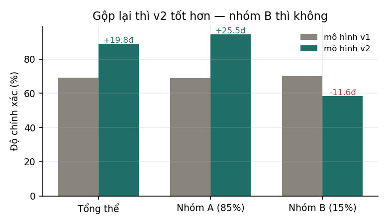
| Lát cắt | v1 | v2 | Thay đổi |
|---|---|---|---|
| Tổng thể | 69,14% | 88,96% | +19,83 điểm |
| Nhóm A — khách cũ, 85% lưu lượng | 68,99% | 94,48% | +25,49 điểm |
| Nhóm B — khách mới, 15% lưu lượng | 69,97% | 58,35% | −11,62 điểm |
Cơ chế thì đơn giản và đáng nói ra khi phỏng vấn: mô hình học được trọng số lớn cho đặc trưng mới (trọng số đo được là 2,28 so với 1,07 của đặc trưng cũ) vì với 85% dữ liệu đặc trưng ấy rất tốt. Với 15% còn lại, chính trọng số lớn ấy bơm nhiễu thẳng vào dự đoán. Nhóm B không chỉ không được lợi — nó bị hại, và tụt xuống dưới cả mức của mô hình cũ.
Đây cũng là minh hoạ sống của nguyên lý CACE ở Mục 1.3: thêm một đặc trưng không phải là cộng thêm một thứ, mà là đổi toàn bộ hàm số.
Lát cắt nào cần theo dõi? Tối thiểu bốn nhóm:
- Lát cắt nghiệp vụ: khách mới / cũ, thị trường, hạng khách hàng, kênh.
- Lát cắt kỹ thuật: thiết bị, phiên bản ứng dụng, có / không có đặc trưng nào đó.
- Lát cắt công bằng: các nhóm được pháp luật bảo vệ, nếu bài toán có liên quan.
- Lát cắt thời gian: theo giờ trong ngày, theo ngày trong tuần, ngày lễ.
Tiêu chí Model 6 của ML Test Score phát biểu đúng yêu cầu này: chất lượng mô hình phải đủ tốt trên mọi lát cắt dữ liệu quan trọng.
6.4. Kiểm thử hành vi#
Ngoài chỉ số trên tập kiểm tra, mô hình cần loại kiểm thử mà phần mềm thường vẫn dùng: khẳng định về hành vi, không về độ chính xác trung bình. Ba họ:
# 1. Bất biến — đổi thứ không nên ảnh hưởng, dự đoán phải giữ nguyên
assert model("Chuyến bay tới Hà Nội bị huỷ") == model("Chuyến bay tới Đà Nẵng bị huỷ")
# 2. Kỳ vọng có hướng — đổi thứ có hướng rõ ràng, dự đoán phải đổi đúng hướng
assert risk(income=50_000_000) < risk(income=5_000_000)
# 3. Chức năng tối thiểu — các ca đơn giản mà hệ thống KHÔNG ĐƯỢC PHÉP sai
assert sentiment("Sản phẩm này tuyệt vời") == "tích cực"
Giá trị của chúng: một mô hình có thể tăng 1 điểm độ chính xác trung bình mà lại mất khả năng xử lý đúng một ca hiển nhiên. Chỉ số trung bình không bao giờ báo chuyện đó; kiểm thử hành vi thì báo ngay.
6.5. ML Test Score#
Bộ tiêu chí đầy đủ nhất để trả lời câu "hệ thống của bạn đã sẵn sàng cho sản xuất chưa" là The ML Test Score: A Rubric for ML Production Readiness and Technical Debt Reduction (Breck và cộng sự, Google, 2017). Nó gồm 28 mục, chia đều thành 4 nhóm 7 mục.
Nhóm 1 — Dữ liệu và đặc trưng
| # | Nội dung |
|---|---|
| Data 1 | Kỳ vọng về đặc trưng được ghi lại thành một schema |
| Data 2 | Mọi đặc trưng đều có ích — không có kiểu "vơ hết vào" |
| Data 3 | Không đặc trưng nào có chi phí quá đắt so với lợi ích |
| Data 4 | Đặc trưng tuân thủ các yêu cầu ở mức chính sách (quyền riêng tư, pháp lý) |
| Data 5 | Pipeline dữ liệu có kiểm soát quyền riêng tư phù hợp |
| Data 6 | Thêm đặc trưng mới được nhanh |
| Data 7 | Toàn bộ mã tính đặc trưng đều được kiểm thử |
Nhóm 2 — Phát triển mô hình
| # | Nội dung |
|---|---|
| Model 1 | Mọi đặc tả mô hình đều qua rà soát mã và được đưa vào quản lý phiên bản |
| Model 2 | Chỉ số đại diện ngoại tuyến tương quan với tác động thật |
| Model 3 | Mọi siêu tham số đã được tinh chỉnh |
| Model 4 | Đã biết ảnh hưởng của việc mô hình cũ đi (staleness) |
| Model 5 | Một mô hình đơn giản hơn không tốt hơn — kiểm tra định kỳ |
| Model 6 | Chất lượng đủ tốt trên mọi lát cắt quan trọng |
| Model 7 | Đã kiểm tra các khía cạnh về tính bao hàm / công bằng |
Nhóm 3 — Hạ tầng ML
| # | Nội dung |
|---|---|
| Infra 1 | Huấn luyện lặp lại được |
| Infra 2 | Mã đặc tả mô hình có kiểm thử đơn vị |
| Infra 3 | Toàn bộ pipeline có kiểm thử tích hợp |
| Infra 4 | Chất lượng mô hình được kiểm định trước khi phục vụ |
| Infra 5 | Mô hình cho phép gỡ lỗi bằng cách quan sát từng bước |
| Infra 6 | Mô hình được thử qua quy trình canary trước khi ra toàn bộ |
| Infra 7 | Quay lui được nhanh và an toàn |
Nhóm 4 — Giám sát
| # | Nội dung |
|---|---|
| Monitor 1 | Thay đổi ở phụ thuộc thượng nguồn sinh ra thông báo |
| Monitor 2 | Bất biến dữ liệu giữ đúng ở cả huấn luyện lẫn phục vụ |
| Monitor 3 | Đặc trưng lúc huấn luyện và lúc phục vụ tính ra cùng giá trị |
| Monitor 4 | Mô hình không quá cũ |
| Monitor 5 | Mô hình ổn định về mặt số học |
| Monitor 6 | Mô hình không bị tụt chất lượng đột ngột |
| Monitor 7 | Mô hình không bị tụt chất lượng do hồi quy (regression) |
Cách tính điểm — và đây là phần tinh tế nhất, rất đáng nhớ:
- 0,5 điểm nếu mục đó được thực hiện thủ công, có ghi lại kết quả và có phân phát cho người liên quan;
- 1 điểm nếu có hệ thống chạy mục đó tự động, lặp lại theo định kỳ;
- cộng điểm riêng cho từng nhóm trong bốn nhóm;
- điểm cuối cùng là GIÁ TRỊ NHỎ NHẤT trong bốn điểm nhóm.
Lý do lấy nhỏ nhất được bài báo nói rõ: cả bốn nhóm đều quan trọng, nên muốn nâng điểm thì phải quan tâm cả bốn. Hệ quả sắc bén: một đội có hạ tầng huấn luyện hoàn hảo nhưng không giám sát gì thì điểm bằng 0 — dù ba nhóm kia đạt tối đa.
Cách đọc điểm (Bảng V của bài báo):
| Điểm | Ý nghĩa |
|---|---|
| 0 | Giống một dự án nghiên cứu hơn là một hệ thống sản xuất |
| (0, 1] | Không phải hoàn toàn chưa kiểm thử, nhưng đáng lo về những lỗ hổng nghiêm trọng |
| (1, 2] | Đã có bước đầu đưa vào sản xuất, cần đầu tư thêm |
| (2, 3] | Kiểm thử tương đối đủ, nhưng nhiều mục còn có thể tự động hoá |
| (3, 5] | Mức kiểm thử và giám sát tự động mạnh, hợp cho hệ thống trọng yếu |
| > 5 | Mức tự động hoá xuất sắc |
Bài báo cũng ghi chú rằng hệ thống ở giai đoạn khác nhau thì hợp lý khi nhắm tới điểm khác nhau — một prototype không cần đạt 4.
7. Đóng gói và phục vụ mô hình#
7.1. Ba chế độ phục vụ#
| Chế độ | Cách chạy | Hợp với | Độ trễ nhãn | Cái khó chính |
|---|---|---|---|---|
| Theo lô (batch) | chấm điểm định kỳ, ghi kết quả vào bảng | gợi ý hằng ngày, chấm điểm rủi ro | dài | dự đoán cũ khi người dùng vừa đổi hành vi |
| Trực tuyến (online / request-response) | gọi đồng bộ, trả trong vài chục ms | xếp hạng tìm kiếm, chống gian lận | ngắn | ngân sách độ trễ, đuôi phân phối |
| Luồng (streaming) | phản ứng theo sự kiện, trạng thái cập nhật liên tục | phát hiện bất thường, cá nhân hoá tại chỗ | ngắn | tính đúng của trạng thái, xử lý sự kiện đến muộn |
Sai lầm hay gặp là chọn trực tuyến vì nghe hiện đại hơn. Nguyên tắc đúng: chọn chế độ rẻ nhất mà vẫn đáp ứng yêu cầu nghiệp vụ, vì chi phí vận hành tăng rất nhanh từ trái sang phải.
7.2. Ngân sách độ trễ#
Phục vụ trực tuyến bắt đầu bằng một phép tính, không phải bằng một lựa chọn công nghệ. Ví dụ ngân sách 150 ms cho một lượt xếp hạng tìm kiếm:
| Thành phần | Ngân sách |
|---|---|
| Mạng vào + ra | 20 ms |
| Tra đặc trưng ở kho trực tuyến | 25 ms |
| Tiền xử lý đặc trưng | 10 ms |
| Suy luận mô hình | 60 ms |
| Hậu xử lý, ghi log | 15 ms |
| Dự phòng | 20 ms |
Điểm cần rút ra: phần suy luận thường chỉ chiếm chưa tới một nửa ngân sách. Tối ưu mô hình từ 60 ms xuống 30 ms chỉ cải thiện tổng thể 20%, trong khi giảm một lần tra đặc trưng thừa có thể cho nhiều hơn thế. Đây là phiên bản độ trễ của cùng bài học Hình 1.
7.3. Vì sao phải nói p99 chứ không nói trung bình#
Độ trễ trung bình gần như vô dụng, vì phân phối độ trễ lệch phải rất mạnh: đa số yêu cầu nhanh, một ít rất chậm. Người dùng cảm nhận cái chậm.
Nhưng lý do sâu hơn, và là thứ đáng nói khi phỏng vấn, là hiệu ứng đuôi khi toả nhánh. Nếu một yêu cầu phải gọi dịch vụ song song và chỉ trả lời khi cả đã xong, thì thời gian trả lời là giá trị lớn nhất của biến ngẫu nhiên. Với lần gọi độc lập có hàm phân phối :
Nói cách khác, muốn đạt p99 ở mức tổng thể thì mỗi nhánh phải đạt tới phân vị — với thì đó là phân vị 99,99.
Thí nghiệm trong code/mlops/experiments.py dùng phân phối log-chuẩn với trung vị 20 ms và p99 = 100 ms cho một dịch vụ:
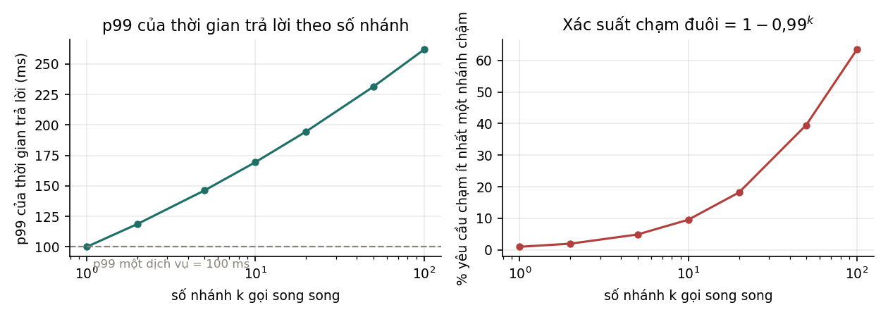
| Số nhánh | p99 của tổng thể | % yêu cầu chạm ít nhất một nhánh chậm |
|---|---|---|
| 1 | 100,0 ms | 1,0% |
| 10 | 169,5 ms | 9,6% |
| 50 | 231,4 ms | 39,5% |
| 100 | 261,9 ms | 63,4% |
Con số cuối là con số đáng nhớ nhất chương: nếu mỗi trong 100 dịch vụ đều "nhanh ở mức p99", thì 63% số yêu cầu vẫn chạm phải ít nhất một dịch vụ chậm. Cải thiện trung bình không giúp gì cho chuyện này; chỉ có ba cách chữa — giảm , cắt đuôi bằng thời hạn chờ (timeout) và trả lời một phần, hoặc gửi yêu cầu dự phòng (hedged request).
7.4. Đóng gói và ranh giới môi trường#
Nỗi đau số một trong nghiên cứu phỏng vấn là lệch giữa môi trường phát triển và môi trường sản xuất. Nó sinh ra một căng thẳng thật sự: môi trường phát triển cần nhanh và thoải mái, môi trường sản xuất cần chặt — nhưng càng khác nhau thì càng khó kiểm định sớm.
Ba thực hành giảm khoảng cách ấy:
- Cùng một ảnh container cho huấn luyện và phục vụ, chỉ khác điểm vào (entrypoint).
- Cùng một hàm biến đổi đặc trưng, đóng gói cùng mô hình thay vì cài đặt lại ở dịch vụ phục vụ (xem Mục 4.4).
- Kiểm thử tích hợp toàn pipeline chạy trong CI trên một tập dữ liệu nhỏ nhưng thật — đây đúng là mục Infra 3 của ML Test Score.
Về bản thân tạo tác mô hình, có một đánh đổi đáng biết:
| Cách đóng gói | Ưu | Nhược |
|---|---|---|
Pickle / state_dict |
đơn giản, giữ nguyên hệ sinh thái | phụ thuộc chặt phiên bản thư viện; pickle còn là rủi ro an ninh khi nạp tệp không tin cậy |
| Đồ thị đã xuất (ONNX, TorchScript, SavedModel) | độc lập ngôn ngữ, tối ưu được, ranh giới rõ | mất linh hoạt, phải kiểm chứng đồ thị xuất ra khớp với bản gốc |
Với cách thứ hai, luôn phải thêm một kiểm thử: chạy cả hai bản trên cùng một lô đầu vào và so đầu ra. Đây chính là tinh thần của thí nghiệm "trùng khớp từng bit" ở giáo trình Quantization — cùng một kỷ luật, khác đối tượng.
8. Chiến lược ra mắt#
8.1. Bốn cách, khác nhau ở chỗ ai chịu rủi ro#
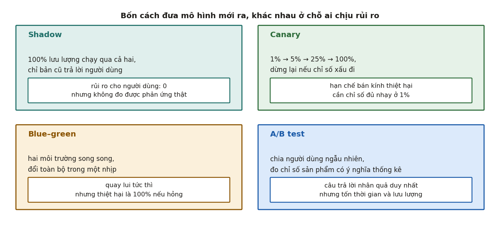
| Chiến lược | Trả lời được câu hỏi | Không trả lời được |
|---|---|---|
| Shadow (song song ngầm) | Mô hình mới có sập không, có chậm không, dự đoán có khác nhiều không? | Người dùng có phản ứng tốt hơn không — vì họ không hề thấy nó |
| Canary (ra mắt dần) | Có chỉ số vận hành nào xấu đi ở quy mô nhỏ không? | Hiệu ứng dài hạn, hiệu ứng mạng |
| Blue–green | (chủ yếu là cơ chế triển khai, không phải cơ chế học) | Không trả lời câu hỏi nào về chất lượng |
| A/B test | Mô hình mới có làm chỉ số sản phẩm tốt lên một cách nhân quả không? | Câu trả lời nhanh — nó tốn thời gian và lưu lượng |
Nghiên cứu phỏng vấn ghi nhận một thực hành chuẩn: trải một lần ra mắt qua nhiều giai đoạn và đánh giá ở từng giai đoạn. Trình tự điển hình: ngoại tuyến → shadow → canary 1% → A/B 50% → toàn bộ. Mỗi cửa loại được một lớp rủi ro, và loại càng sớm thì càng rẻ.
Nhưng bài báo cũng ghi nhận cái giá: "triển khai nhiều giai đoạn tưởng như kéo dài vô tận". Một người được phỏng vấn cho biết ở công ty họ, thời gian thử một ý tưởng đặc trưng mới mất hơn ba tháng, và chỉ khoảng 40–50% số ý tưởng đi được tới lần ra mắt đầu tiên; trong số đã ra mắt lại rơi tiếp khoảng một nửa vì lý do pháp lý, quyền riêng tư hay độ phức tạp.
8.2. Shadow: mạnh hơn người ta tưởng#
Shadow thường bị coi là bước cho có. Thực ra nó trả lời được ba câu hỏi rất đắt, với rủi ro bằng 0 cho người dùng:
- Mô hình mới có chịu nổi tải thật không — về độ trễ, bộ nhớ, tỉ lệ lỗi.
- Đặc trưng lúc phục vụ có khớp lúc huấn luyện không — đây chính là mục Monitor 3 của ML Test Score, và shadow là cách rẻ nhất để đo nó trên lưu lượng thật.
- Phân phối dự đoán có lệch bất thường không — so sánh phân phối của bản mới và bản cũ.
Điểm thứ hai đáng nhấn. Nhiều lỗi skew chỉ lộ ra trên phân phối đầu vào thật, không lộ trên tập kiểm tra. Shadow bắt được chúng trước khi có bất kỳ người dùng nào bị ảnh hưởng.
8.3. Canary: phải đủ nhạy ở 1%#
Canary chỉ có ý nghĩa nếu ở mức lưu lượng nhỏ bạn vẫn đo được điều gì đó. Và đây là chỗ nhiều đội tự lừa mình: ở 1% lưu lượng, chỉ số sản phẩm gần như chắc chắn không đủ mẫu để có ý nghĩa thống kê.
Cách làm đúng là phân tầng chỉ số theo độ nhạy:
| Ở canary 1%, đo được | Phải đợi A/B mới đo được |
|---|---|
| tỉ lệ lỗi, độ trễ p50/p95/p99 | tỉ lệ chuyển đổi, doanh thu mỗi phiên |
| phân phối dự đoán | giữ chân người dùng |
| tỉ lệ đặc trưng thiếu / null | chỉ số dài hạn |
Nói ngắn: canary bảo vệ khỏi thảm hoạ, A/B trả lời câu hỏi về giá trị. Lẫn hai vai trò này là lỗi thiết kế quy trình hay gặp nhất.
8.4. A/B test: cỡ mẫu quyết định mọi thứ#
Với chỉ số là một tỉ lệ (tỉ lệ click, tỉ lệ chuyển đổi), cỡ mẫu mỗi nhánh cần để phát hiện chênh lệch ở mức ý nghĩa và lực kiểm định là
Điều cần nhớ nằm ở mẫu số: tỉ lệ nghịch với bình phương mức cải thiện. Muốn bắt cải thiện nhỏ đi một nửa thì cần gấp bốn lần lưu lượng.
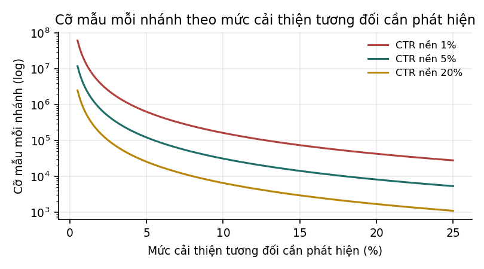
Bảng dưới lấy tỉ lệ nền 5%, hai phía, lực kiểm định 80% — tính trong code/mlops/experiments.py:
| Cải thiện tương đối cần bắt | Cỡ mẫu mỗi nhánh | Số ngày nếu mỗi nhánh có 100 000 lượt/ngày |
|---|---|---|
| 1% | 2 996 694 | 30,0 ngày |
| 2% | 752 700 | 7,5 ngày |
| 5% | 122 121 | 1,2 ngày |
| 10% | 31 231 | 0,3 ngày |
| 20% | 8 155 | 0,1 ngày |
Hàng đầu tiên là câu trả lời cho một câu hỏi phỏng vấn rất hay: "vì sao không A/B test mọi thay đổi?" Vì để chứng minh một cải thiện 1% trên tỉ lệ nền 5%, bạn cần ba triệu mẫu mỗi nhánh — một tháng lưu lượng cho một ý tưởng. Lưu lượng là tài nguyên khan hiếm, và mọi quy trình ra mắt tốt đều được thiết kế để không phí nó vào những ý tưởng có thể loại sớm hơn bằng cách rẻ hơn.
8.5. Ba cái bẫy thống kê#
- Peeking (nhìn lén). Kiểm tra p-value liên tục và dừng ngay khi thấy làm tỉ lệ dương tính giả cao hơn 5% rất nhiều. Chữa bằng cách cố định cỡ mẫu trước, hoặc dùng phương pháp thiết kế cho việc theo dõi liên tục (kiểm định tuần tự, ranh giới alpha-spending).
- So nhiều chỉ số cùng lúc. Theo dõi 20 chỉ số ở mức thì kỳ vọng có 1 chỉ số "có ý nghĩa" hoàn toàn do ngẫu nhiên. Chữa bằng cách khai báo trước một chỉ số chính, còn lại là chỉ số bảo vệ (guardrail).
- Ô nhiễm giữa hai nhánh. Trong mạng xã hội hoặc thị trường hai chiều, người ở nhánh A ảnh hưởng tới người ở nhánh B, nên giả thiết độc lập vỡ. Chữa bằng chia ngẫu nhiên theo cụm (theo vùng, theo nhóm bạn bè) thay vì theo cá nhân.
9. Dịch chuyển phân phối#
9.1. Ba loại, định nghĩa cho chặt#
Mô hình học quan hệ giữa và từ phân phối chung . Phân phối chung ấy tách được theo hai cách, và mỗi cách cho một họ dịch chuyển:
| Tên | Cái gì đổi | Cái gì giữ nguyên | Ví dụ |
|---|---|---|---|
| Covariate shift | Chiến dịch marketing kéo về nhóm khách trẻ hơn. Quan hệ "trẻ → hành vi" không đổi, chỉ là có nhiều người trẻ hơn. | ||
| Label shift (prior probability shift) | Tỉ lệ gian lận tăng gấp đôi trong dịp lễ, nhưng giao dịch gian lận vẫn "trông" như cũ. | ||
| Concept drift | Cùng một hồ sơ khách hàng, nhưng định nghĩa "rủi ro" đã đổi vì chính sách tín dụng mới. |
Điểm cần nắm: covariate shift và concept drift là hai vế của cùng một cách tách; label shift thuộc cách tách kia. Vì vậy hỏi "đây là covariate shift hay label shift" đôi khi không có câu trả lời duy nhất — nó phụ thuộc bạn coi hướng nhân quả đi từ đâu tới đâu.
9.2. Thí nghiệm: loại nào dò được mà không cần nhãn#
Đây là kết quả quan trọng nhất của chương, và là câu trả lời phỏng vấn phân biệt người đã vận hành thật.
Thí nghiệm trong code/mlops/experiments.py: huấn luyện một bộ phân loại tuyến tính trên dữ liệu nguồn, rồi thả nó vào ba thế giới đã dịch chuyển. Với mỗi thế giới, đo hai thứ — độ chính xác thật (cần nhãn) và kiểm định KS hai mẫu trên từng đặc trưng (không cần nhãn).
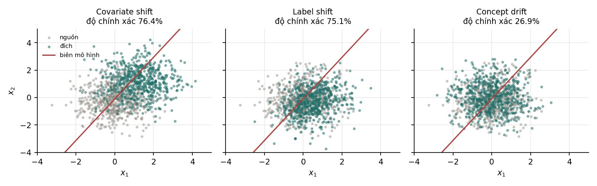
| Kịch bản | Độ chính xác | KS trên | KS trên | Dò được chỉ bằng ? |
|---|---|---|---|---|
| Không dịch chuyển | 75,6% | — | — | — |
| Covariate shift | 76,4% | CÓ | ||
| Label shift | 75,1% | CÓ | ||
| Concept drift | 26,9% | KHÔNG |
Đọc bảng này cho kỹ, vì nó chứa hai bài học ngược chiều nhau:
- Hai hàng giữa: dò được nhưng gần như vô hại. Kiểm định KS hét toáng lên ( nhỏ tới mức máy làm tròn về 0), trong khi độ chính xác gần như không đổi. Nếu bạn cảnh báo dựa trên dịch chuyển của , đây chính là báo động giả — nỗi đau được nhắc nhiều nhất ở Mục 3.2.
- Hàng cuối: không dò được nhưng tàn phá. Độ chính xác rơi từ 75,6% xuống 26,9% — tệ hơn cả đoán bừa — trong khi mọi thống kê trên đều bình thường.
Kết luận phải thuộc: giám sát không bao giờ phát hiện được concept drift, vì theo đúng định nghĩa concept drift giữ nguyên . Muốn bắt nó thì phải có tín hiệu về nhãn — nhãn thật, nhãn trễ, nhãn đại diện, hoặc phản hồi gián tiếp của người dùng.
Đây cũng là lý do Mục 3.5 nói độ trễ nhãn quyết định gần như mọi thứ khác: nó quyết định bạn có khả năng nhìn thấy loại dịch chuyển nguy hiểm nhất hay không.
9.3. Các phép dò và phạm vi dùng được#
| Phép | Dùng cho | Ưu | Nhược |
|---|---|---|---|
| Kolmogorov–Smirnov hai mẫu | biến liên tục, một chiều | không giả định phân phối, có p-value thật | chỉ một chiều; với lớn thì nhạy tới mức vô nghĩa |
| Chi-square | biến rời rạc / đã chia bin | có p-value, lý thuyết rõ | phải chọn bin; kém khi ô thưa |
| PSI | cả hai, đã chia bin | một con số dễ báo cáo | không có p-value, ngưỡng là quy ước (Mục 9.5) |
| MMD (maximum mean discrepancy) | nhiều chiều | xử lý được vector, có kiểm định hoán vị | tốn tính toán, phải chọn hạt nhân |
| Bộ phân loại phân biệt (domain classifier) | nhiều chiều | trực giác rõ: nếu phân biệt được nguồn/đích thì đã dịch chuyển; AUC là thước đo độ lớn | cần huấn luyện thêm một mô hình |
Hai lưu ý thực hành:
- Đơn biến trên trăm đặc trưng thì phải hiệu chỉnh đa kiểm định. Chạy KS trên 200 đặc trưng ở thì kỳ vọng 2 đặc trưng báo động mỗi lần chạy dù không có gì xảy ra. Hoặc hiệu chỉnh (Bonferroni, Benjamini–Hochberg), hoặc chuyển sang một phép đa biến.
- Dịch chuyển đáng lo nhất thường nằm ở tương quan, không ở biên. Từng đặc trưng vẫn đúng phân phối cũ nhưng quan hệ giữa chúng đổi — chỉ phép đa biến hoặc domain classifier mới thấy.
9.4. PSI thực chất là gì#
PSI được định nghĩa trên hai phân phối đã chia bin, với là tỉ lệ ở bin của tập nền và của tập hiện tại:
Khai triển ra thì thấy ngay nó là cái gì:
PSI chính là phân kỳ Jeffreys — tổng hai chiều của KL divergence. Nó đối xứng, khác với KL. Nói được điều này trong phỏng vấn là dấu hiệu hiểu bản chất chứ không thuộc công thức.
PSI ra đời trong chấm điểm tín dụng và trở thành chuẩn công nghiệp ở đó. Kèm theo nó là bộ ngưỡng quy ước, được trích dẫn khắp nơi:
| PSI | Diễn giải quy ước |
|---|---|
| < 0,10 | phân phối ổn định |
| 0,10 – 0,25 | có dịch chuyển nhỏ, nên xem xét |
| > 0,25 | dịch chuyển đáng kể, cần hành động |
9.5. Vì sao bộ ngưỡng ấy không dùng thẳng được#
Ba ngưỡng trên là quy tắc kinh nghiệm, không phải kết quả thống kê. Vấn đề của chúng đã được chỉ ra trong tài liệu học thuật về chấm điểm tín dụng: Yurdakul và Naranjo chứng minh rằng một phiên bản PSI được co giãn lại tuân theo phân phối tiệm cận, và lập luận rằng nên dùng giá trị tới hạn tiệm cận thay cho quy tắc kinh nghiệm — bởi các giá trị tới hạn ấy phụ thuộc cả cỡ mẫu lẫn số bin.
Tài liệu này kiểm chứng lại điều đó bằng mô phỏng. Lấy hai mẫu từ đúng cùng một phân phối chuẩn — tức không hề có dịch chuyển nào — rồi tính PSI:
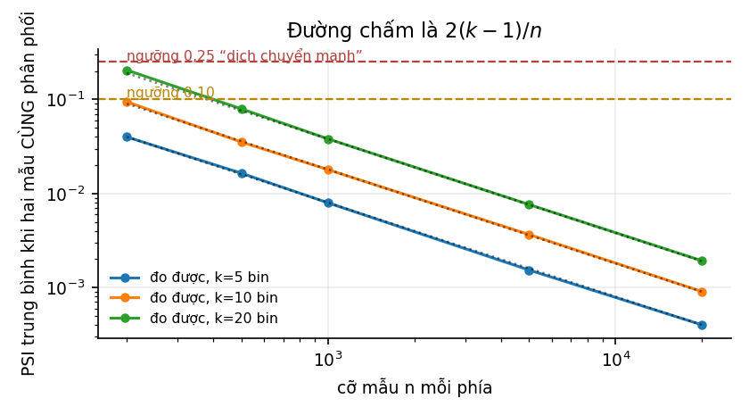
| mỗi mẫu | bin | bin | bin | Lý thuyết , |
|---|---|---|---|---|
| 200 | 0,0399 | 0,0943 | 0,2050 | 0,0900 |
| 500 | 0,0164 | 0,0353 | 0,0795 | 0,0360 |
| 1 000 | 0,0080 | 0,0179 | 0,0381 | 0,0180 |
| 5 000 | 0,0015 | 0,0037 | 0,0076 | 0,0036 |
| 20 000 | 0,0004 | 0,0009 | 0,0019 | 0,0009 |
Suy luận đằng sau con số . Khi hai mẫu cùng phân phối, và chênh lệch chỉ cỡ . Khai triển cho
mà với hai mẫu độc lập, nên xấp xỉ một biến với bậc tự do — đúng kết quả tiệm cận nói trên. Lấy kỳ vọng:
Hệ quả sắc bén, và là câu trả lời hay cho câu hỏi "bạn dùng ngưỡng PSI nào":
- Với và bin, PSI trung bình là 0,205 khi không có bất kỳ dịch chuyển nào — sát ngay ngưỡng 0,25 "dịch chuyển mạnh".
- Với , PSI chỉ là 0,0009. Ngưỡng 0,25 lúc này không bao giờ chạm tới, kể cả khi có dịch chuyển thật.
Nói cách khác: cùng một ngưỡng PSI vừa tạo ra báo động giả ở mẫu nhỏ, vừa mù hoàn toàn ở mẫu lớn. Thí nghiệm tiếp theo đo trực tiếp điều đó.
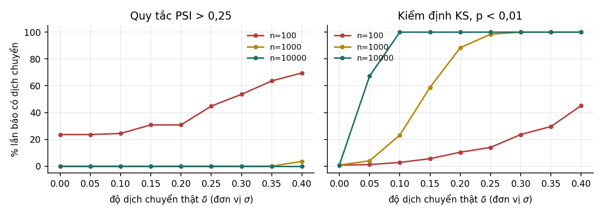
| thật | PSI > 0,25 báo | KS báo | |
|---|---|---|---|
| 50 | 0 (không dịch chuyển) | 73% | 0% |
| 100 | 0 | 24% | 1% |
| 200 | 0 | 0% | 0% |
| 1 000 | 0 | 0% | 2% |
| 1 000 | 0,3 | 0% | 100% |
| 10 000 | 0,1 | 0% | 100% |
Hai hàng đầu và hai hàng cuối là toàn bộ câu chuyện: ở thì PSI báo động 73% số lần dù không có gì xảy ra; ở với dịch chuyển thật thì PSI không báo lần nào trong khi KS báo 100%.
Nên làm gì thay thế. Ba cách, theo thứ tự đáng ưu tiên:
- Dùng kiểm định có p-value (KS, chi-square, hoán vị MMD) và hiệu chỉnh đa kiểm định. Ngưỡng khi ấy tự thích ứng với .
- Nếu bắt buộc dùng PSI (vì quy định ngành, vì báo cáo quen thuộc), hãy hiệu chuẩn ngưỡng bằng mô phỏng trên chính và của mình: chạy lại hai mẫu cùng phân phối vài trăm lần, lấy phân vị 99% của PSI làm ngưỡng.
- Luôn cố định và giữa các kỳ đo. Nếu cỡ lô thay đổi theo ngày thì PSI của hai ngày khác nhau không so được với nhau, dù chẳng có dịch chuyển nào.
9.6. Chọn cửa sổ thời gian#
Mọi phép dò đều so "hiện tại" với "tham chiếu", và cả hai đều cần định nghĩa:
| Lựa chọn | Đánh đổi |
|---|---|
| Cửa sổ hiện tại ngắn (một giờ) | Phát hiện nhanh, nhưng nhiễu lớn và báo động giả nhiều |
| Cửa sổ hiện tại dài (một tuần) | Ổn định, nhưng một cú sốc đột ngột bị pha loãng và phát hiện muộn |
| Tham chiếu cố định (tập huấn luyện) | Trả lời đúng câu "đã xa mô hình tới đâu"; nhưng sẽ báo động mãi sau khi dịch chuyển đã ổn định thành bình thường mới |
| Tham chiếu trượt (30 ngày gần nhất) | Thích ứng với bình thường mới; nhưng không bao giờ thấy dịch chuyển chậm, vì tham chiếu trôi theo |
Cái bẫy nằm ở hàng cuối: tham chiếu trượt làm dịch chuyển chậm trở nên vô hình, đúng loại dịch chuyển mà Chương 11 cho thấy là tốn kém nhất. Cách dùng đúng là giữ cả hai — tham chiếu cố định để biết khoảng cách so với mô hình, tham chiếu trượt để biết có cú sốc mới không.
Cuối cùng, một cạm bẫy riêng: tính mùa vụ. Lưu lượng thứ Bảy khác thứ Ba, tháng Chạp khác tháng Ba. So thứ Bảy với tham chiếu tính trên ngày thường sẽ báo dịch chuyển mỗi tuần một lần, rất đều đặn và hoàn toàn vô nghĩa. Cách chữa tối thiểu là so cùng kỳ (thứ Bảy với thứ Bảy).
10. Giám sát và cảnh báo#
10.1. Hai loại chỉ số, đừng trộn#
| Loại | Ví dụ | Ai lo | Khi hỏng thì biết ngay? |
|---|---|---|---|
| Chỉ số vận hành | độ trễ, thông lượng, tỉ lệ lỗi, mức dùng CPU/GPU/bộ nhớ, thời gian hoạt động | giống hệt mọi dịch vụ khác | Có |
| Chỉ số riêng của ML | độ chính xác, phân phối dự đoán, phân phối đặc trưng, chất lượng dữ liệu vào | chỉ ML mới có | Không |
Hệ thống ML sập vì lý do vận hành thì cũng giống mọi hệ thống khác, và ngành phần mềm đã biết cách xử lý từ lâu. Phần đáng viết ra trong tài liệu này là loại thứ hai.
10.2. Bốn lớp để giám sát#
Xếp theo thứ tự càng gần nhãn thì càng có ý nghĩa, nhưng càng khó lấy:
| Lớp | Giám sát cái gì | Có ngay không | Ý nghĩa |
|---|---|---|---|
| 1. Đầu vào thô | tệp/luồng tới có đúng số lượng, đúng giờ, đúng schema không | ngay | thấp — chỉ bắt lỗi cứng |
| 2. Đặc trưng | phân phối từng đặc trưng, tỉ lệ null, danh mục lạ | ngay | vừa — bắt được covariate shift và skew |
| 3. Dự đoán | phân phối , tỉ lệ theo lớp, độ tin cậy trung bình | ngay | khá — bắt được nhiều sự cố mà không cần nhãn |
| 4. Chỉ số chất lượng | độ chính xác, AUC, chỉ số sản phẩm | chỉ khi có nhãn | cao nhất — nhưng thường tới trễ |
Nguyên tắc dùng: báo động ở lớp 4 khi có thể, điều tra ở lớp 1–3 khi lớp 4 chưa tới. Đội không có nhãn nhanh thì lớp 3 là tuyến phòng thủ chính.
10.3. Độ lệch dự đoán#
Sculley và cộng sự đề xuất một phép kiểm tra đơn giản đến bất ngờ mà lại hữu dụng:
Prediction bias. Trong một hệ thống chạy đúng, phân phối nhãn được dự đoán thường phải bằng phân phối nhãn quan sát được.
Bài báo cũng tự nêu giới hạn của nó rất thành thật: đây không phải phép kiểm tra đầy đủ, vì một mô hình rỗng chỉ đoán tỉ lệ trung bình cũng thoả mãn. Nhưng thay đổi của chỉ số này thường là dấu hiệu của sự cố cần chú ý.
Sức mạnh của nó nằm ở chỗ: nó không cần nhãn tức thời cho từng dự đoán, chỉ cần biết tỉ lệ nền theo thời gian. Nếu tỉ lệ gian lận lịch sử là 1,2% mà mô hình đột nhiên gắn cờ 4,5% giao dịch, thì có chuyện — dù chưa có nhãn nào cho ngày hôm nay.
Cách dùng thực hành là chia theo lát cắt: độ lệch dự đoán theo từng thị trường, từng kênh, từng phiên bản ứng dụng. Độ lệch tổng thể bằng 0 vẫn có thể che giấu hai lát cắt lệch ngược chiều nhau.
10.4. Hai cơ chế nữa từ cùng bài báo#
Giới hạn hành động (action limits). Với hệ thống đưa ra hành động thật — đặt giá thầu, chặn tin nhắn, khoá tài khoản — cần đặt và cưỡng chế giới hạn hành động như một phép kiểm tra tỉnh táo. Giới hạn phải đủ rộng để không nổ vu vơ; khi chạm giới hạn thì báo động tự động và có người vào xem.
Đây là loại biện pháp rẻ và cứu được nhiều thảm hoạ: nó không cần biết mô hình đúng hay sai, chỉ cần biết "khoá 50 000 tài khoản trong một giờ" là điều chưa từng xảy ra và không nên xảy ra.
Nhà cung cấp thượng nguồn (up-stream producers). Dữ liệu chảy vào hệ thống học từ nhiều nguồn thượng nguồn. Các nguồn ấy phải được giám sát, kiểm thử và đạt một SLO có tính đến nhu cầu của hệ thống ML ở hạ nguồn. Quan trọng hơn: mọi cảnh báo ở thượng nguồn phải được truyền tới mặt phẳng điều khiển của hệ thống ML, và ngược lại, nếu hệ ML không đạt SLO thì phải báo xuống mọi bên tiêu thụ.
Đây chính là cách chặn dạng nợ undeclared consumer ở Mục 1.4 — biến quan hệ ngầm thành hợp đồng có tên và có cảnh báo hai chiều.
10.5. Cảnh báo: kẻ thù là báo động giả#
Nhắc lại nỗi đau được nêu nhiều nhất trong nghiên cứu phỏng vấn: báo động giả. Hậu quả không phải là phiền toái mà là mất niềm tin, và một hệ cảnh báo không được tin thì tệ hơn không có hệ cảnh báo, vì nó tạo cảm giác an toàn giả.
Bốn nguyên tắc thiết kế:
- Mỗi cảnh báo phải gắn với một hành động. Nếu người nhận không biết phải làm gì, đó không phải cảnh báo — đó là một biểu đồ. Cho nó vào bảng điều khiển, đừng cho nó đánh thức ai.
- Phân tầng theo mức độ. Trang (đánh thức người) cho lỗi cứng và sập dịch vụ; vé (ticket) cho dịch chuyển và suy giảm chậm; bảng điều khiển cho phần còn lại.
- Cảnh báo trên triệu chứng, không trên nguyên nhân. "Tỉ lệ chuyển đổi giảm 15%" đáng đánh thức người. "PSI của đặc trưng số 37 vượt 0,2" thì không — đó là một manh mối cho cuộc điều tra, không phải một sự cố.
- Đòi hỏi độ dai (persistence). Một điểm dữ liệu vượt ngưỡng là nhiễu; vượt ngưỡng trong ba cửa sổ liên tiếp mới là tín hiệu.
10.6. Ngưỡng cố định trong hệ thống động#
Một dạng nợ riêng mà Sculley và cộng sự đặt tên, và rất hay gặp trong thực tế:
Fixed thresholds in dynamic systems. Mô hình nào cũng cần một ngưỡng quyết định — báo đúng hay sai, đánh dấu thư rác hay không. Ngưỡng ấy thường được đặt bằng tay để cân bằng precision và recall. Nhưng khi mô hình được huấn luyện lại trên dữ liệu mới, ngưỡng cũ có thể không còn hợp lệ.
Cập nhật tay ngưỡng cho nhiều mô hình vừa tốn công vừa dễ quên. Cách chữa đúng là học ngưỡng cùng mô hình trên một tập kiểm định giữ riêng, và coi ngưỡng là một phần của tạo tác mô hình chứ không phải một hằng số trong cấu hình dịch vụ.
Đây là một ví dụ rất gọn của CACE: huấn luyện lại đã đổi phân phối điểm số đầu ra, nên mọi thứ phụ thuộc vào thang điểm ấy đều đã đổi theo — kể cả một con số nằm trong tệp YAML mà không ai nghĩ là một phần của mô hình.
11. Huấn luyện lại và tự động hoá#
11.1. Mô hình cũ đi nhanh đến mức nào#
Trước khi hỏi "bao lâu huấn luyện lại một lần", phải trả lời được cái giá của việc không huấn luyện lại. ML Test Score có riêng hai mục cho việc này: Model 4 — đã biết ảnh hưởng của độ cũ — và Monitor 4 — mô hình không quá cũ.
Thí nghiệm trong code/mlops/experiments.py: mô phỏng một thế giới có concept drift chậm (biên quyết định xoay dần 0,035 radian mỗi tuần, tức khoảng ), chạy 52 tuần với bốn nhịp huấn luyện lại.
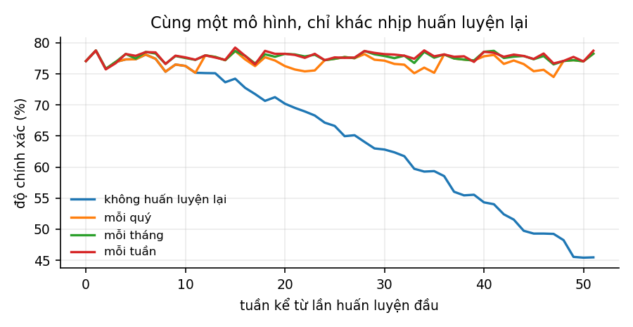
| Nhịp huấn luyện lại | Độ chính xác trung bình | Thấp nhất | Tuần 52 |
|---|---|---|---|
| Không bao giờ | 64,61% | 45,42% | 45,48% |
| Mỗi quý | 76,89% | 74,50% | 78,25% |
| Mỗi tháng | 77,68% | 75,80% | 78,25% |
| Mỗi tuần | 77,80% | 75,72% | 78,72% |
Ba điều rút ra, và cả ba đều là câu trả lời phỏng vấn tốt:
- Không huấn luyện lại thì mất 13,19 điểm phần trăm độ chính xác trung bình trong một năm, và tới tuần 52 thì mô hình chỉ còn 45,5% — tệ hơn đoán bừa trên bài toán hai lớp cân bằng. Đáng chú ý là nó tụt dần, nên không có ngày nào báo động nổ.
- Lợi ích giảm dần rất nhanh. Từ "không bao giờ" lên "mỗi quý" được thêm 12,3 điểm. Từ "mỗi quý" lên "mỗi tuần" chỉ được thêm 0,91 điểm. Nhịp hằng tuần đắt hơn hằng quý khoảng 13 lần về chi phí vận hành, để đổi lấy chưa tới một điểm.
- Vì vậy nhịp đúng là một quyết định kinh tế, không phải kỹ thuật. Nó được xác định bằng cách đo đường cong này trên chính bài toán của mình, rồi so giá trị của một điểm phần trăm với chi phí một chu kỳ huấn luyện.
11.2. Bốn loại kích hoạt#
| Kích hoạt | Cơ chế | Ưu | Nhược |
|---|---|---|---|
| Theo lịch | cron: mỗi tuần / mỗi tháng | đơn giản, dễ dự đoán tài nguyên | huấn luyện lại vô ích khi yên ổn; quá muộn khi có cú sốc |
| Theo chất lượng | chỉ số tụt quá ngưỡng | phản ứng đúng lúc cần | cần nhãn, nên bị chặn bởi độ trễ nhãn |
| Theo dịch chuyển | phép dò ở Chương 9 báo | không cần nhãn | bắt được covariate shift, mù với concept drift |
| Theo lượng dữ liệu | đủ mẫu mới | hợp khi dữ liệu tới không đều | không liên quan gì tới việc mô hình có còn tốt không |
Cấu hình thực tế thường là theo lịch làm nền, cộng thêm kích hoạt theo chất lượng hoặc theo dịch chuyển để cắt ngang khi cần. Nghiên cứu phỏng vấn ghi nhận một thực hành đơn giản hơn nhiều so với những gì người ta hay nghĩ: huấn luyện lại thường xuyên trên dữ liệu và nhãn trực tiếp, coi đó là cách tạo phiên bản mới — thay vì xây một cơ chế kích hoạt thông minh.
11.3. Huấn luyện lại từ đầu hay học liên tục#
| Huấn luyện lại từ đầu | Học liên tục (continual / online) | |
|---|---|---|
| Dữ liệu dùng | toàn bộ cửa sổ lịch sử | chỉ dữ liệu mới |
| Chi phí mỗi lần | cao | thấp |
| Khả năng lặp lại | tốt — dựng lại được từ dữ liệu + hạt giống | kém — trạng thái phụ thuộc toàn bộ chuỗi cập nhật đã qua |
| Quay lui | dễ: nạp lại tạo tác cũ | khó: phải phát lại lịch sử |
| Rủi ro riêng | không có | quên thảm hoạ (catastrophic forgetting); một lô dữ liệu bẩn làm hỏng vĩnh viễn |
Lời khuyên: mặc định là huấn luyện lại từ đầu, và chỉ chuyển sang học liên tục khi có ràng buộc thật sự buộc phải làm thế (dữ liệu quá lớn để giữ, hoặc yêu cầu thích ứng trong vài phút). Lý do nằm ở hai hàng giữa bảng — khả năng lặp lại và khả năng quay lui là hai thứ bạn chỉ thấy quý vào đúng ngày xảy ra sự cố.
11.4. Nguyên tắc: huấn luyện lại phải đi qua đúng những cửa đó#
Sai lầm nguy hiểm nhất trong tự động hoá huấn luyện lại là để nó đi tắt. Một pipeline huấn luyện lại tự động phải đi qua chính những cửa kiểm định mà một lần phát hành thủ công phải đi qua:
dữ liệu mới
→ kiểm định dữ liệu (Chương 3; hỏng thì DỪNG, không huấn luyện)
→ huấn luyện
→ đánh giá trên tập cố định (Chương 6, có chia lát cắt)
→ SO VỚI MÔ HÌNH ĐANG CHẠY ← cửa hay bị quên nhất
→ kiểm thử hành vi (Mục 6.4)
→ đăng ký vào sổ (staging)
→ shadow → canary → toàn bộ (Chương 8)
Cửa "so với mô hình đang chạy" đáng nói riêng. Tài liệu Google Cloud đặt bước kiểm định mô hình (model validation) tách hẳn khỏi bước đánh giá mô hình (model evaluation) trong tám bước ở Mục 2.3, đúng vì lý do này: đánh giá trả lời "mô hình này tốt đến đâu", còn kiểm định trả lời "có nên thay thế cái đang chạy bằng nó không". Một mô hình huấn luyện lại tự động mà kém hơn bản cũ thì phải bị chặn tự động, không cần ai nhìn thấy.
Và vì mọi thứ đều tự động, cơ chế quay lui cũng phải tự động — đó là Infra 7 của ML Test Score: mô hình phải quay lui được nhanh và an toàn.
12. Vòng phản hồi: khi mô hình tự tạo ra dữ liệu của mình#
12.1. Hai loại vòng phản hồi#
Sculley và cộng sự phân biệt:
- Vòng phản hồi trực tiếp (direct feedback loop): mô hình ảnh hưởng trực tiếp tới việc chọn dữ liệu huấn luyện tương lai của chính nó. Bài báo ghi chú rằng lời giải đúng về mặt lý thuyết là thuật toán bandit (ví dụ contextual bandit), nhưng bandit không co giãn tốt lên kích thước không gian hành động của bài toán thật; cách giảm nhẹ khả thi là thêm một lượng ngẫu nhiên hoá, hoặc cô lập một phần dữ liệu khỏi ảnh hưởng của mô hình.
- Vòng phản hồi ẩn (hidden feedback loop): hai hệ thống ảnh hưởng lẫn nhau gián tiếp qua thế giới. Khó hơn hẳn, vì không có đường dữ liệu nào trong sơ đồ hệ thống cho thấy mối liên hệ ấy.
12.2. Vòng phản hồi thoái hoá#
Trường hợp riêng quan trọng nhất trong sản xuất là cái mà Chip Huyen gọi là degenerate feedback loop: dự đoán ảnh hưởng tới phản hồi, phản hồi được dùng làm nhãn để huấn luyện vòng sau, nên hệ thống tự xác nhận chính mình.
Cơ chế rất dễ hiểu qua một hệ gợi ý:
- Món A tình cờ được xếp cao hơn món B ở vòng đầu, dù chất lượng thật tương đương.
- A được hiển thị nhiều hơn → nhận nhiều click hơn (chỉ vì được nhìn thấy nhiều hơn).
- Vòng huấn luyện sau thấy "A có nhiều click" → xếp A còn cao hơn.
- B không bao giờ được hiển thị nữa, nên không bao giờ có cơ hội chứng minh mình.
Điểm chết người: dữ liệu trông rất đẹp. Tỉ lệ click trên những gì được hiển thị vẫn cao, vì hệ thống chỉ hiển thị thứ nó tin là tốt. Mọi chỉ số ngoại tuyến đều xanh.
12.3. Thí nghiệm: đo mức thiệt hại#
Mô phỏng trong code/mlops/experiments.py: danh mục 2000 món với chất lượng thật khác nhau, hệ thống khởi động bằng một vòng hiển thị ngẫu nhiên nhỏ rồi cứ thế huấn luyện lại trên log click của chính nó, 30 vòng, trung bình 20 lần chạy.
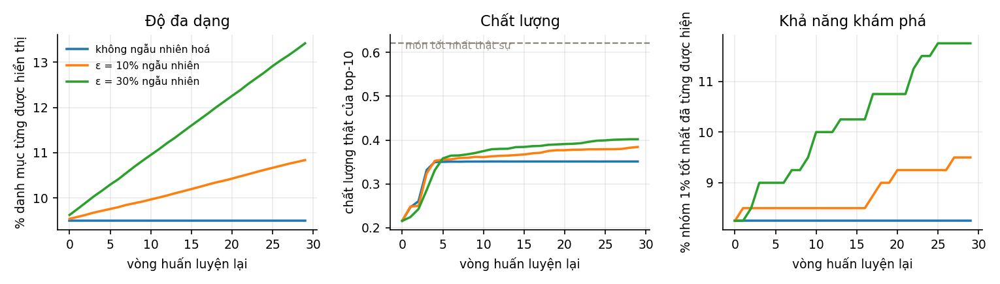
| Chiến lược | Phủ danh mục | Chất lượng thật của top-10 | Đã thấy nhóm 1% tốt nhất |
|---|---|---|---|
| Không ngẫu nhiên hoá | 9,5% | 0,351 | 8% |
| ε = 10% chỗ dành cho ngẫu nhiên | 10,8% | 0,384 | 10% |
| ε = 30% chỗ dành cho ngẫu nhiên | 13,4% | 0,402 | 12% |
Để so sánh: trần có thể đạt (chất lượng trung bình của 10 món tốt nhất thật sự) là 0,555, còn trung bình cả danh mục là 0,153.
Đọc bảng:
- Hệ không ngẫu nhiên hoá đạt 0,351, tức 63% của trần, và vĩnh viễn chỉ nhìn thấy 9,5% danh mục. Nó không hỏng — nó chỉ không bao giờ tốt hơn được.
- Dành 30% số chỗ cho hiển thị ngẫu nhiên nâng chất lượng lên 0,402 (+15%) và mở rộng vùng nhìn thấy lên 41%.
- Cái giá phải trả là hiển thị 30% số chỗ cho món chưa biết gì — tức hy sinh ngắn hạn để đổi lấy khả năng học dài hạn. Đây đúng là đánh đổi khai thác – khám phá (exploitation – exploration), và cũng đúng là "thêm một lượng ngẫu nhiên hoá" mà Sculley và cộng sự đề xuất.
12.4. Nhận ra và chữa#
Dấu hiệu nhận biết — không dấu hiệu nào nằm trong chỉ số chất lượng thông thường:
- Độ đa dạng giảm dần qua các vòng: entropy của phân phối hiển thị, số món phân biệt được hiển thị, tỉ lệ phủ danh mục.
- Phân phối hiển thị lệch dần về một nhóm nhỏ: tỉ trọng của top 1% món tăng đều.
- Nhóm mới không bao giờ nổi lên: món mới thêm vào danh mục không bao giờ vào được top.
Cách chữa, theo thứ tự chi phí:
- Ngẫu nhiên hoá một phần chỗ hiển thị (ε-greedy). Rẻ nhất, và như thí nghiệm cho thấy là hiệu quả rõ rệt.
- Giữ một nhóm đối chứng không bị mô hình tác động. Một tỉ lệ nhỏ lưu lượng nhận kết quả ngẫu nhiên hoặc theo heuristic. Đây là nguồn dữ liệu không thiên lệch duy nhất bạn có, và là cách duy nhất để đo mô hình thật sự tốt đến đâu.
- Hiệu chỉnh theo xác suất hiển thị (inverse propensity weighting): khi huấn luyện, đánh trọng số mỗi mẫu bằng nghịch đảo xác suất nó được hiển thị, để bù cho thiên lệch phơi nhiễm. Đòi hỏi phải ghi lại xác suất hiển thị tại thời điểm hiển thị — và đây là thứ phải quyết định làm trước, vì không thể khôi phục về sau.
- Đưa vị trí vào mô hình rồi đặt cứng lúc suy luận: thêm đặc trưng "vị trí hiển thị" lúc huấn luyện để mô hình học được phần click do vị trí gây ra, rồi lúc phục vụ thì đặt vị trí là một hằng số cho mọi món. Cách chuẩn để khử thiên lệch vị trí.
Điểm thứ hai đáng nhấn mạnh hơn cả. Một nhóm đối chứng nhỏ, giữ thường trực, là khoản bảo hiểm rẻ nhất trong toàn bộ tài liệu này: nó vừa cho bạn dữ liệu sạch để huấn luyện, vừa cho bạn thước đo trung thực về giá trị thật của hệ thống.
13. LLMOps#
13.1. Cái gì đổi, cái gì không#
Phần lớn nội dung mười hai chương trước vẫn đúng nguyên: vẫn cần hợp đồng dữ liệu, vẫn cần quản phiên bản, vẫn cần shadow và canary, vẫn cần giám sát và quay lui. Cái đổi là năm ràng buộc:
| Ràng buộc | MLOps cổ điển | LLMOps |
|---|---|---|
| Huấn luyện | ta tự huấn luyện | thường dùng mô hình của bên thứ ba; "huấn luyện lại" thành đổi prompt, đổi ngữ cảnh, đổi bản mô hình |
| Đầu ra | một số hoặc một lớp | văn bản tự do — không có hàm đúng/sai hiển nhiên |
| Tính tất định | đặt hạt giống là lặp lại được | có ngẫu nhiên do nhiệt độ, và bản mô hình của nhà cung cấp đổi dưới chân ta |
| Chi phí | chủ yếu là chi phí huấn luyện, cố định | chủ yếu là chi phí suy luận theo token, biến thiên theo từng yêu cầu |
| Rủi ro | dự đoán sai | dự đoán sai cộng thêm rò rỉ dữ liệu, nội dung độc hại, prompt injection |
Hàng thứ ba đáng nói nhất về mặt vận hành: trong MLOps cổ điển, tạo tác mô hình nằm trong tay bạn và bất biến. Với mô hình gọi qua API, nhà cung cấp có thể đổi mô hình mà bạn không biết. Đó là dạng cực đoan nhất của unstable data dependency ở Mục 1.4, và cách chữa cũng giống: ghim phiên bản mô hình, và coi mỗi lần đổi phiên bản là một lần phát hành đầy đủ, phải qua shadow và canary.
13.2. Đánh giá: ba tầng#
Vì không có hàm mất mát hiển nhiên, đánh giá trở thành phần đắt nhất của LLMOps. Thực hành hội tụ trong ngành là ba tầng, đánh đổi giữa chi phí và độ tin:
| Tầng | Chạy trên | Chi phí | Bắt được gì |
|---|---|---|---|
| Kiểm tra quy tắc (heuristic) | 100% số lượt | gần như bằng 0 | định dạng sai, JSON hỏng, thiếu trích dẫn, độ dài bất thường, từ khoá cấm |
| LLM làm giám khảo (LLM-as-judge) | mẫu 10–20% (hoặc 1–5% khi lưu lượng lớn) | trung bình | chất lượng ngữ nghĩa: bám nguồn, hữu ích, đúng giọng, từ chối đúng lúc |
| Người chấm | mẫu nhỏ, định kỳ | cao | sự thật nền — dùng để hiệu chuẩn lại giám khảo |
Cấu trúc này giải một bài toán rất quen: nó là phiên bản LLM của bốn lớp giám sát ở Mục 10.2 — càng gần sự thật thì càng đắt, nên phải lấy mẫu.
Tầng ba là tầng hay bị bỏ nhất và cũng là tầng giữ cho cả hệ thống trung thực. Giám khảo LLM cũng là một mô hình, nên nó cũng trôi. Không có người chấm định kỳ để đối chiếu, bạn sẽ có một hệ đánh giá tự tin nói rằng mọi thứ đều ổn.
13.3. Những thiên lệch đã biết của giám khảo LLM#
Cần biết để phòng, và đây là câu hỏi phỏng vấn tốt cho vị trí LLMOps:
- Thiên lệch vị trí — với hai câu trả lời đặt cạnh nhau, giám khảo hay ưu ái vị trí thứ nhất. Chữa bằng cách hỏi hai lần với thứ tự đảo, và chỉ tính là thắng khi cả hai lần đều thắng.
- Thiên lệch độ dài — câu trả lời dài hơn hay được chấm cao hơn, dù không tốt hơn. Chữa bằng cách kiểm soát độ dài trong rubric hoặc chuẩn hoá theo độ dài.
- Thiên lệch tự ưu ái — mô hình chấm cao hơn cho văn bản do chính họ mô hình sinh ra. Chữa bằng cách dùng mô hình giám khảo khác họ với mô hình đang phục vụ.
- Rubric mơ hồ — "câu trả lời này có tốt không" cho kết quả bất ổn định. Chữa bằng rubric nhiều chiều, mỗi chiều một tiêu chí nhị phân hoặc thang ngắn, kèm ví dụ mẫu.
Và một kỷ luật bao trùm: đo độ đồng thuận giữa giám khảo và người chấm, và coi nó là trần trên cho mọi kết luận rút ra từ giám khảo — đúng như lập luận về mức đồng thuận giữa người gán nhãn ở Mục 3.5.
13.4. Hai vòng đánh giá#
Cách tổ chức đang thành chuẩn:
- Vòng ngoại tuyến — tập vàng (golden set). Một tập câu hỏi khó, được tuyển chọn, phải đạt trước mỗi lần phát hành. Đây chính là cửa chất lượng trong CI, tương đương "so với mô hình đang chạy" ở Mục 11.4.
- Vòng trực tuyến — chấm mẫu trên lưu lượng thật. Chấm bất đồng bộ 1–5% số lượt thật và gắn điểm vào bản ghi vết (trace).
Nguyên tắc quan trọng nhất về tập vàng: nó phải sống. Nghiên cứu phỏng vấn nêu đúng thực hành này cho ML nói chung — tập kiểm định phải động: mỗi sự cố sản xuất phải được biến thành một ca mới trong tập vàng. Một tập vàng đóng băng sẽ dần chỉ đo những thứ bạn đã biết cách làm đúng.
13.5. RAG: phải quy được lỗi về đâu#
Với hệ thống truy hồi tăng cường (RAG), một câu trả lời sai có hai nguyên nhân khác hẳn nhau, và chữa hai kiểu khác nhau:
| Nguyên nhân | Biểu hiện | Đo bằng | Chữa bằng |
|---|---|---|---|
| Truy hồi hỏng | tài liệu đúng không nằm trong ngữ cảnh | recall@k, MRR trên tập câu hỏi có nhãn tài liệu | cải thiện chia đoạn, embedding, truy hồi lai, rerank |
| Sinh hỏng | tài liệu đúng có trong ngữ cảnh nhưng câu trả lời vẫn sai | độ bám nguồn (groundedness / faithfulness) — câu trả lời có được chống đỡ bởi ngữ cảnh không | sửa prompt, đổi mô hình, buộc trích dẫn |
Đây là phép chẩn đoán đầu tiên phải làm với mọi lỗi RAG, và là câu hỏi phỏng vấn rất hay gặp. Trả lời sai thường là do gộp hai loại lỗi vào một chỉ số duy nhất — lúc đó bạn không biết nên đi sửa chỗ nào.
Ba chỉ số nên theo dõi cho RAG: độ bám nguồn (câu trả lời có nằm trong ngữ cảnh không), độ liên quan của ngữ cảnh (đoạn lấy về có liên quan không), độ liên quan của câu trả lời (có trả lời đúng câu hỏi không).
13.6. Chi phí và độ trễ#
Đây là phần khác MLOps cổ điển nhiều nhất, vì chi phí biến thiên theo từng yêu cầu.
Cần ghi lại theo từng bản ghi vết, và tách bạch:
chi phí một lượt = (token vào × đơn giá vào) + (token ra × đơn giá ra)
+ chi phí của các lượt gọi giám khảo ← ghi thành dòng chi phí RIÊNG
+ chi phí truy hồi (embedding + tìm kiếm vector)
Tách dòng chi phí giám khảo là chi tiết nhỏ nhưng quan trọng: nếu gộp, bạn sẽ không biết vì sao chi phí tăng khi tăng tỉ lệ lấy mẫu đánh giá, và sẽ cắt nhầm chỗ.
Ba đòn bẩy giảm chi phí, theo thứ tự nên thử:
- Lưu đệm (cache) — đệm chính xác cho câu hỏi lặp, đệm ngữ nghĩa cho câu hỏi gần giống; đệm tiền tố cho phần prompt hệ thống cố định.
- Định tuyến (routing) — câu dễ cho mô hình nhỏ và rẻ, câu khó mới đẩy lên mô hình lớn. Cần một bộ phân loại độ khó, và bản thân nó cũng là một mô hình phải giám sát.
- Nén ngữ cảnh — bớt số đoạn lấy về, tóm tắt lịch sử hội thoại. Đây là đòn bẩy mạnh nhất vì chi phí tỉ lệ thuận với số token vào.
Về độ trễ, hai chỉ số riêng mà MLOps cổ điển không có: thời gian tới token đầu tiên (quyết định cảm nhận về độ nhạy) và thời gian giữa các token (quyết định cảm nhận về tốc độ). Và toàn bộ phân tích đuôi ở Mục 7.3 vẫn áp dụng nguyên — một hệ tác tử gọi mô hình nhiều lượt nối tiếp là một trường hợp cực đoan của bài toán nhánh.
13.7. Rào chắn#
Rào chắn (guardrails) là các kiểm tra chạy quanh lượt gọi mô hình, ở cả hai đầu:
| Ở đầu vào | Ở đầu ra |
|---|---|
| lọc prompt injection | kiểm tra định dạng (JSON hợp lệ, đúng schema) |
| phát hiện và che dữ liệu cá nhân | phát hiện nội dung độc hại |
| chặn chủ đề ngoài phạm vi | kiểm tra bám nguồn cho RAG |
| giới hạn tần suất theo người dùng | giới hạn hành động — đúng cơ chế ở Mục 10.4 |
Hàng cuối đáng nhấn. Với hệ tác tử có quyền gọi công cụ thật — gửi thư, hoàn tiền, sửa dữ liệu — thì giới hạn hành động của Sculley và cộng sự trở lại đúng nguyên văn: đặt trần cho số hành động mỗi loại trong mỗi cửa sổ thời gian, và khi chạm trần thì dừng và gọi người. Một mô hình ngôn ngữ nhầm lẫn mà có quyền hoàn tiền thì nguy hiểm hơn hẳn một mô hình chấm điểm nhầm.
13.8. Phiên bản hoá cái gì#
Chữ V thứ ba áp cho LLM với một danh sách dài hơn. Một "phiên bản" của hệ thống LLM gồm ít nhất:
- prompt (kể cả prompt hệ thống và các ví dụ few-shot);
- bản mô hình và tham số sinh (nhiệt độ, top-p, giới hạn token);
- cấu hình truy hồi (mô hình embedding, cách chia đoạn, , bộ rerank);
- ảnh chụp kho tri thức (corpus đã lập chỉ mục tại thời điểm nào);
- định nghĩa công cụ mà tác tử được phép gọi;
- rubric đánh giá và tập vàng đã dùng để duyệt.
Đổi bất kỳ thứ nào trong sáu thứ trên là một phiên bản mới, và phải đánh giá lại. Đây là CACE của Mục 1.3 phát biểu lại cho thời LLM: prompt, mô hình, corpus và công cụ rối vào nhau; đổi một là đổi tất cả.
14. Bài tập#
Bài 1 (tính tay). Đội bạn giám sát dịch chuyển bằng PSI với bin, mỗi ngày lấy mẫu cho cả tập nền lẫn tập hiện tại. Tính PSI kỳ vọng khi không hề có dịch chuyển. Với ngưỡng cảnh báo 0,10, bạn có yên tâm không? Cần bằng bao nhiêu để PSI kỳ vọng dưới 0,01? Gợi ý: dùng ở Mục 9.5 và đối chiếu với bảng đo được.
Bài 2 (tính tay). Tỉ lệ chuyển đổi nền là 2%. Bạn muốn phát hiện một cải thiện tương đối 5% với hai phía và lực kiểm định 80%. Tính cỡ mẫu mỗi nhánh. Nếu mỗi nhánh nhận 40 000 lượt mỗi ngày thì thí nghiệm chạy bao lâu? Nếu sếp muốn rút xuống một nửa thời gian mà không giảm lực kiểm định thì có những lựa chọn nào? Gợi ý: , với và .
Bài 3 (tính tay). Một yêu cầu xếp hạng gọi song song 25 dịch vụ đặc trưng, mỗi dịch vụ có p99 là 80 ms và phải đợi đủ cả 25 mới trả lời. Tính tỉ lệ yêu cầu chạm ít nhất một dịch vụ vượt p99. Nếu muốn p99 tổng thể đạt 80 ms thì mỗi dịch vụ phải nhanh tới phân vị nào? Nêu hai cách chữa không đòi hỏi làm mỗi dịch vụ nhanh hơn.
Bài 4 (suy luận). Cho bảng lịch sử đặc trưng và bảng nhãn dưới đây. Hãy viết ra tập huấn luyện đúng theo thời điểm, rồi chỉ ra tập huấn luyện sai mà một phép JOIN thông thường sẽ tạo ra, và nói rõ mô hình sẽ học nhầm điều gì.
| user_id | valid_from | tong_don_hang |
|---|---|---|
| 7 | 2026-01-01 | 3 |
| 7 | 2026-03-01 | 19 |
| 7 | 2026-06-01 | 52 |
| user_id | event_time | nhan |
|---|---|---|
| 7 | 2026-02-10 | 0 |
| 7 | 2026-04-15 | 1 |
Bài 5 (phân loại). Xếp mỗi tình huống vào covariate shift, label shift hay concept drift, và cho biết có dò được bằng cách chỉ giám sát hay không: (a) Một chiến dịch quảng cáo kéo về lượng lớn người dùng dưới 25 tuổi. (b) Ngân hàng đổi định nghĩa "nợ xấu" từ quá hạn 90 ngày xuống 60 ngày. (c) Mùa mua sắm cuối năm làm tỉ lệ giao dịch gian lận tăng gấp ba, nhưng cách gian lận không đổi. (d) Một đối thủ ra mắt tính năng mới làm thay đổi hẳn kỳ vọng của người dùng về "kết quả tìm kiếm tốt". Gợi ý: hai trong bốn trường hợp không dò được bằng , và đó đúng là hai trường hợp tàn phá nhất — xem bảng ở Mục 9.2.
Bài 6 (ML Test Score). Một đội có: schema đặc trưng đầy đủ và kiểm thử đơn vị cho mọi mã đặc trưng (tự động), huấn luyện lặp lại được và kiểm thử tích hợp toàn pipeline (tự động), canary và quay lui tự động, nhưng giám sát thì chỉ có biểu đồ độ trễ và tỉ lệ lỗi, không có mục nào trong bốn nhóm giám sát của ML Test Score. Tính điểm ML Test Score của đội và giải thích vì sao quy tắc lấy giá trị nhỏ nhất cho ra con số đó. Đội nên làm gì đầu tiên?
Bài 7 (thí nghiệm). Chạy lại code/mlops/experiments.py phần (G) với các tốc độ dịch chuyển khác nhau (DRIFT = 0,01 / 0,035 / 0,08 radian mỗi tuần). Với mỗi tốc độ, tìm nhịp huấn luyện lại nhỏ nhất sao cho độ chính xác trung bình nằm trong 1 điểm phần trăm so với nhịp hằng tuần. Rút ra quan hệ giữa tốc độ dịch chuyển và nhịp huấn luyện lại hợp lý.
Bài 8 (thí nghiệm). Trong phần (H), quét từ 0 đến 0,5 với bước 0,05 và vẽ chất lượng thật của top-10 ở vòng cuối theo . Có tồn tại tối ưu không? Giải thích vì sao đường cong có dạng như vậy, và điều gì sẽ đổi nếu số vòng tăng từ 30 lên 300.
Bài 9 (thiết kế). Thiết kế hệ giám sát cho một mô hình phát hiện gian lận có độ trễ nhãn 30 ngày (tranh chấp giao dịch mất một tháng mới được xác nhận). Nêu rõ: bạn giám sát gì ở mỗi lớp trong bốn lớp ở Mục 10.2, chỉ số nào đủ tư cách đánh thức người lúc 3 giờ sáng, và bạn phát hiện concept drift bằng cách nào khi nhãn tới trễ một tháng.
Bài 10 (thiết kế, LLM). Thiết kế quy trình đánh giá cho một trợ lý hỏi đáp RAG trên tài liệu nội bộ công ty, lưu lượng 50 000 lượt/ngày, ngân sách đánh giá bằng 3% chi phí suy luận. Nêu rõ ba tầng đánh giá và tỉ lệ lấy mẫu từng tầng, cách bạn tách lỗi truy hồi khỏi lỗi sinh, và cách bạn phát hiện khi nào chính mô hình giám khảo đã trôi.
15. Ôn phỏng vấn#
Chương này không thêm kiến thức mới. Nó sắp xếp lại những gì đã có thành dạng dùng được trong phòng phỏng vấn.
15.1. Khung trả lời#
Phần lớn câu hỏi MLOps là câu hỏi mở, và người phỏng vấn nghe cách bạn nghĩ chứ không nghe danh sách công cụ. Khung bốn bước dưới đây dùng được cho gần như mọi câu:
- Nêu ràng buộc trước. "Điều này phụ thuộc độ trễ nhãn" hay "phụ thuộc có bao nhiêu mô hình dùng chung đặc trưng" — nêu được ràng buộc là đã chứng minh bạn hiểu bài toán.
- Nêu đánh đổi. Mọi lựa chọn trong tài liệu này đều là đánh đổi. Câu trả lời không có đánh đổi là câu trả lời thuộc lòng.
- Chọn một phương án và nói vì sao. Không được dừng ở "còn tuỳ".
- Nói cách đo xem mình có chọn đúng không. Đây là bước phân biệt rõ nhất người đã vận hành thật.
Và một mẹo: nhắc được một con số cụ thể làm câu trả lời nặng ký hẳn lên. Tài liệu này cố tình cung cấp sẵn những con số đó.
15.2. Nhóm câu hỏi nền tảng#
"MLOps là gì, khác DevOps chỗ nào?"
Ý chính: DevOps quản một tạo tác thay đổi khi có người sửa mã. MLOps quản ba tạo tác — mã, dữ liệu, mô hình — với ba nhịp thay đổi khác nhau, trong đó dữ liệu thay đổi mà không ai chạm vào repo.
Ghi điểm thêm: vì thế ML có chữ C thứ ba là CT — huấn luyện liên tục bên cạnh CI/CD. Và hệ quả vận hành là ML hỏng im lặng: một mô hình nhận đầu vào lệch phân phối vẫn trả về đúng kiểu dữ liệu, đúng thời hạn, và sai.
"Vì sao mô hình tốt lại chết trong sản xuất?"
Trả lời bằng bốn nguyên nhân có tên, mỗi cái một câu: training–serving skew (đặc trưng tính khác nhau hai bên), dịch chuyển phân phối (thế giới đổi), phụ thuộc dữ liệu không ổn định (nguồn thượng nguồn đổi mà không ai báo), vòng phản hồi (mô hình làm hỏng dữ liệu huấn luyện của chính nó).
Ghi điểm thêm: nhắc nguyên lý CACE — đổi bất cứ thứ gì là đổi tất cả — và giải thích vì sao nó làm mọi trực giác "sửa cục bộ" của kỹ sư phần mềm thành vô hiệu.
"Con số 5% mã ML nghĩa là gì?"
Đây là câu bẫy, vì phần lớn người trả lời theo trí nhớ mơ hồ. Trả lời đúng gồm ba ý ở Mục 1.5: nó là phát biểu về mã keo chứ không phải chú thích của hình vẽ; nó có biên (nhiều nhất 5% / ít nhất 95%); và kết luận đi kèm là đôi khi viết gọn từ đầu còn rẻ hơn tái dùng một gói đa dụng.
"Kể tên các mức trưởng thành MLOps."
Mức 0: mọi thứ thủ công, bàn giao một mô hình. Mức 1: pipeline huấn luyện tự động, bàn giao cả pipeline, có CT. Mức 2: CI/CD cho chính pipeline, bàn giao một hệ thống tự cập nhật.
Ghi điểm thêm: nêu được rằng thứ được bàn giao lớn dần chính là trục của thang đo này, và đội ở mức 1 mà không có giám sát thì vẫn không an toàn hơn mức 0 bao nhiêu.
15.3. Nhóm dữ liệu và đặc trưng#
"Training–serving skew là gì, chống thế nào?"
Là khi đặc trưng lúc phục vụ được tính khác lúc huấn luyện — thường vì hai bên có hai bản cài đặt riêng, một bản SQL trên kho dữ liệu, một bản mã dịch vụ viết lại cho đủ nhanh.
Chống: một định nghĩa đặc trưng duy nhất dùng chung cho cả hai đường; đóng gói hàm biến đổi cùng mô hình; và đo nó bằng cách so giá trị đặc trưng ở hai bên trên cùng lưu lượng — đúng mục Monitor 3 của ML Test Score. Chạy shadow là cách rẻ nhất để đo trên lưu lượng thật.
"Point-in-time correctness là gì?" — Câu này gần như luôn được hỏi.
Với mỗi dòng huấn luyện có thời điểm dự đoán , giá trị đặc trưng phải là giá trị quan sát được tại , không phải giá trị hôm nay.
Cách kể cho rõ: dùng ví dụ "tổng số đơn hàng": một dòng của tháng 3 phải dùng con số của tháng 3, không dùng con số của hôm nay. Nếu dùng con số hôm nay thì mô hình học rằng "khách có 480 đơn thì không rời bỏ", trong khi 480 tồn tại vì khách đã ở lại.
Ghi điểm thêm: chỉ ra vì sao lỗi này nguy hiểm hơn mọi lỗi khác — nó làm chỉ số ngoại tuyến đẹp lên, nên không ai nghi ngờ cho tới khi đã triển khai.
"Khi nào cần feature store?"
Khi có đồng thời ba điều: nhiều mô hình dùng chung đặc trưng, có phục vụ trực tuyến độ trễ thấp, và đặc trưng phụ thuộc thời gian. Thiếu cả ba thì một bảng trong kho dữ liệu cộng với kỷ luật dùng chung một hàm biến đổi là đủ và rẻ hơn nhiều.
Ghi điểm thêm: feature store không tự động xoá skew, nó chỉ tạo điều kiện; nếu đội vẫn viết đường tính riêng cho phục vụ thì skew quay lại ngay.
"Làm sao biết dữ liệu có vấn đề?"
Dùng khung cứng → mềm → dịch chuyển: lỗi cứng thì chặn pipeline; lỗi mềm thì cảnh báo và theo dõi tỉ lệ; dịch chuyển thì điều tra, có thể huấn luyện lại. Ba loại đòi hỏi ba cách phản ứng khác nhau, và trộn chúng vào một cơ chế cảnh báo là nguồn gốc của báo động giả.
15.4. Nhóm đánh giá và ra mắt#
"Vì sao một chỉ số là không đủ?"
Vì chỉ số gộp là trung bình có trọng số theo lưu lượng, nên nhóm đa số chi phối hoàn toàn.
Kể một con số: trong thí nghiệm ở Mục 6.3, thêm một đặc trưng làm độ chính xác tổng thể tăng 19,8 điểm, nhóm đa số tăng 25,5 điểm, còn nhóm 15% người dùng mới mất 11,6 điểm và tụt xuống dưới cả mô hình cũ. Cơ chế: đặc trưng ấy chỉ có tín hiệu với nhóm đa số, nên với nhóm thiểu số trọng số lớn của nó bơm nhiễu thẳng vào dự đoán.
"Shadow, canary và A/B khác nhau thế nào?"
Mỗi cái trả lời một câu hỏi khác nhau. Shadow: mô hình mới có chịu nổi tải không, đặc trưng có khớp không — rủi ro cho người dùng bằng 0, nhưng không biết họ phản ứng ra sao. Canary: có chỉ số vận hành nào xấu đi ở quy mô nhỏ không — hạn chế bán kính thiệt hại. A/B: mô hình mới có làm chỉ số sản phẩm tốt lên một cách nhân quả không.
Ghi điểm thêm: nói rõ canary không đo được chỉ số sản phẩm, vì ở 1% lưu lượng không đủ mẫu để có ý nghĩa thống kê. Canary bảo vệ khỏi thảm hoạ; A/B trả lời câu hỏi về giá trị. Lẫn hai vai trò này là lỗi quy trình phổ biến nhất.
"Vì sao không A/B test mọi thay đổi?"
Vì lưu lượng là tài nguyên khan hiếm và cỡ mẫu tỉ lệ nghịch với bình phương mức cải thiện.
Kể một con số: với tỉ lệ nền 5%, để bắt một cải thiện tương đối 1% ở lực kiểm định 80% cần khoảng 3 triệu mẫu mỗi nhánh — tức một tháng lưu lượng cho một ý tưởng. Vì vậy quy trình tốt được thiết kế để loại ý tưởng tồi ở giai đoạn rẻ hơn, trước khi tiêu lưu lượng.
"Nêu ba cái bẫy khi đọc kết quả A/B." — Peeking, so nhiều chỉ số cùng lúc, và ô nhiễm giữa hai nhánh. Với mỗi cái nêu cách chữa (cố định cỡ mẫu hoặc kiểm định tuần tự; khai báo trước một chỉ số chính; chia ngẫu nhiên theo cụm).
"ML Test Score tính thế nào?"
28 mục, chia đều bốn nhóm: dữ liệu, mô hình, hạ tầng, giám sát. Mỗi mục được 0,5 điểm nếu làm thủ công có ghi chép, 1 điểm nếu có hệ thống chạy tự động định kỳ. Cộng điểm riêng từng nhóm, rồi điểm cuối là giá trị nhỏ nhất trong bốn nhóm.
Ghi điểm thêm: giải thích vì sao lấy nhỏ nhất — vì cả bốn đều cần thiết, nên đội có hạ tầng hoàn hảo mà không giám sát gì thì điểm bằng 0. Đây thường là nhóm yếu nhất trong thực tế.
15.5. Nhóm giám sát và dịch chuyển#
"Ba loại dịch chuyển phân phối?"
Covariate shift: đổi, giữ. Label shift: đổi, giữ. Concept drift: đổi, giữ.
"Cái nào dò được mà không cần nhãn?" — Đây là câu hỏi quan trọng nhất của cả nhóm.
Chỉ hai loại đầu. Concept drift về nguyên tắc không dò được bằng cách giám sát , vì theo đúng định nghĩa nó giữ nguyên .
Kể một con số: trong thí nghiệm ở Mục 9.2, concept drift làm độ chính xác rơi từ 75,6% xuống 26,9% — tệ hơn đoán bừa — trong khi kiểm định KS trên các đặc trưng cho , tức hoàn toàn bình thường. Ngược lại, covariate shift làm KS hét toáng lên trong khi độ chính xác gần như không đổi: đó chính là báo động giả.
Kết luận: vì vậy độ trễ nhãn quyết định bạn có nhìn thấy loại dịch chuyển nguy hiểm nhất hay không, và mọi thiết kế giám sát phải bắt đầu từ câu hỏi "bao lâu tôi mới biết đáp án thật".
"Bạn dùng ngưỡng PSI nào?" — Câu bẫy. Trả lời "0,25" là trả lời như người chưa đo bao giờ.
PSI thực chất là phân kỳ Jeffreys, tức . Ngưỡng 0,1 và 0,25 là quy tắc kinh nghiệm từ chấm điểm tín dụng, không phải kết quả thống kê, và chúng không tính tới cỡ mẫu lẫn số bin.
Kể một con số: khi hai mẫu cùng một phân phối, PSI kỳ vọng xấp xỉ . Với và 20 bin, PSI trung bình là 0,205 dù không có dịch chuyển nào — sát ngay ngưỡng "dịch chuyển mạnh". Đo thực tế: ở , quy tắc PSI > 0,25 báo động 73% số lần khi không có gì xảy ra; còn ở với dịch chuyển thật thì nó không báo lần nào, trong khi kiểm định KS báo 100%.
Nên làm gì: dùng kiểm định có p-value và hiệu chỉnh đa kiểm định; nếu buộc phải dùng PSI thì hiệu chuẩn ngưỡng bằng mô phỏng trên chính và của mình, và giữ , cố định giữa các kỳ đo.
"Giám sát gì khi không có nhãn?"
Bốn lớp, càng gần nhãn càng có ý nghĩa nhưng càng khó lấy: đầu vào thô → đặc trưng → dự đoán → chỉ số chất lượng. Không có nhãn thì lớp dự đoán là tuyến phòng thủ chính.
Ghi điểm thêm: nhắc độ lệch dự đoán — phân phối nhãn dự đoán thường phải bằng phân phối nhãn quan sát — và nêu luôn giới hạn của nó (một mô hình rỗng chỉ đoán tỉ lệ trung bình cũng thoả mãn), nhưng thay đổi của chỉ số này thường là dấu hiệu sự cố. Và nhắc giới hạn hành động: đặt trần cho số hành động thật mỗi cửa sổ thời gian, chạm trần thì báo người.
"Vì sao cảnh báo hay bị bỏ qua?"
Vì báo động giả. Hậu quả không phải là phiền mà là mất niềm tin, và một hệ cảnh báo không được tin thì tệ hơn không có, vì nó tạo cảm giác an toàn giả. Chữa bằng bốn nguyên tắc: mỗi cảnh báo phải gắn với một hành động; phân tầng trang / vé / bảng điều khiển; cảnh báo trên triệu chứng chứ không trên nguyên nhân; và đòi hỏi độ dai qua nhiều cửa sổ liên tiếp.
15.6. Nhóm thiết kế hệ thống#
Với câu "thiết kế hệ thống ML cho X", đi theo đúng thứ tự này và bạn sẽ không bỏ sót:
- Làm rõ bài toán: chỉ số sản phẩm là gì, chỉ số ML nào đại diện cho nó, và hai chỉ số ấy tương quan tới đâu.
- Hỏi về nhãn: lấy từ đâu, trễ bao lâu, có thiên lệch do chính hệ thống gây ra không. Câu trả lời quyết định phần lớn thiết kế còn lại.
- Chế độ phục vụ: lô, trực tuyến hay luồng — chọn cái rẻ nhất đủ dùng; lập ngân sách độ trễ nếu trực tuyến.
- Dữ liệu và đặc trưng: nguồn, hợp đồng dữ liệu, có cần point-in-time không, có cần feature store không.
- Huấn luyện: nhịp huấn luyện lại và kích hoạt nào, ghim gì để lặp lại được.
- Đánh giá: tập cố định, các lát cắt, kiểm thử hành vi, cửa so với mô hình đang chạy.
- Ra mắt: shadow → canary → A/B, và cơ chế quay lui.
- Giám sát: bốn lớp, chỉ số nào đánh thức người, phản ứng khi báo động.
- Vòng phản hồi: hệ thống có ảnh hưởng tới dữ liệu tương lai của mình không, có cần nhóm đối chứng không.
Bước 2 và bước 9 là hai bước ứng viên hay bỏ nhất, và cũng là hai bước gây ấn tượng nhất khi có.
15.7. Nhóm LLMOps#
"LLMOps khác MLOps chỗ nào?"
Phần lớn không đổi: vẫn cần hợp đồng dữ liệu, quản phiên bản, shadow/canary, giám sát, quay lui. Cái đổi là năm ràng buộc: không tự huấn luyện; đầu ra là văn bản tự do nên không có hàm đúng/sai hiển nhiên; không tất định và nhà cung cấp có thể đổi mô hình dưới chân ta; chi phí là chi phí suy luận theo token, biến thiên từng yêu cầu; và có thêm lớp rủi ro về an toàn nội dung và prompt injection.
Ghi điểm thêm: gọi tên việc nhà cung cấp đổi mô hình là dạng cực đoan của unstable data dependency, và nêu cách chữa giống hệt: ghim phiên bản, coi mỗi lần đổi là một lần phát hành đầy đủ.
"Đánh giá một hệ LLM thế nào?"
Ba tầng theo chi phí: kiểm tra quy tắc trên 100% số lượt (định dạng, JSON, trích dẫn, độ dài); LLM làm giám khảo trên mẫu 10–20% (hoặc 1–5% khi lưu lượng lớn) cho chất lượng ngữ nghĩa; người chấm trên mẫu nhỏ định kỳ để hiệu chuẩn lại giám khảo. Cộng thêm hai vòng: tập vàng làm cửa CI cho mỗi lần phát hành, và chấm mẫu trực tuyến trên lưu lượng thật.
Ghi điểm thêm: nêu các thiên lệch của giám khảo — vị trí, độ dài, tự ưu ái — kèm cách chữa từng cái, và nhấn rằng giám khảo cũng là một mô hình nên nó cũng trôi; không có tầng người chấm thì bạn sẽ có một hệ đánh giá tự tin báo rằng mọi thứ đều ổn.
"Câu trả lời RAG sai thì điều tra thế nào?"
Tách ngay thành hai câu hỏi: tài liệu đúng có nằm trong ngữ cảnh không? Nếu không, đó là lỗi truy hồi — đo bằng recall@k, chữa bằng chia đoạn, embedding, truy hồi lai, rerank. Nếu có mà vẫn sai, đó là lỗi sinh — đo bằng độ bám nguồn, chữa bằng prompt, đổi mô hình, buộc trích dẫn.
Ghi điểm thêm: nói rằng gộp hai loại lỗi vào một chỉ số duy nhất là lý do phổ biến nhất khiến đội không biết nên đi sửa chỗ nào.
"Giảm chi phí LLM thế nào?" — Ba đòn bẩy theo thứ tự nên thử: lưu đệm (chính xác, ngữ nghĩa, tiền tố), định tuyến theo độ khó, nén ngữ cảnh. Nói thêm rằng chi phí gọi giám khảo phải ghi thành dòng chi phí riêng, nếu không sẽ cắt nhầm chỗ khi chi phí tăng.
15.8. Những câu trả lời tự tố cáo#
Cuối cùng, những câu nghe thì trơn tru nhưng lập tức cho thấy người nói chưa vận hành hệ thống thật:
| Câu trả lời | Vì sao nó tố cáo |
|---|---|
| "Tôi giám sát độ chính xác trong sản xuất." | Chỉ đúng khi có nhãn ngay. Không hỏi lại về độ trễ nhãn là bỏ qua ràng buộc quan trọng nhất. |
| "Ngưỡng PSI là 0,25." | Không phụ thuộc và số bin — xem Mục 9.5. |
| "Dùng feature store để hết skew." | Feature store tạo điều kiện, không bảo đảm. |
| "A/B test mọi thứ." | Không biết cỡ mẫu tỉ lệ , tức chưa từng phải phân bổ lưu lượng. |
| "Huấn luyện lại hằng ngày cho chắc." | Không biết lợi ích giảm dần rất nhanh (Mục 11.1) và không nói tới chi phí. |
| "Mô hình đạt 99% nên rất tốt." | Không hỏi về mất cân bằng lớp, về lát cắt, và về trần trên là mức đồng thuận giữa người gán nhãn. |
| "Chúng tôi dùng công cụ X nên chuyện đó được lo." | Công cụ không lo được các đánh đổi; nêu tên công cụ trước khi nêu ràng buộc là dấu hiệu học thuộc. |
| "CI/CD là đủ cho ML." | Bỏ mất CT và bỏ mất chuyện dữ liệu thay đổi mà không ai sửa mã. |
16. Tài liệu tham khảo#
Nền tảng về nợ kỹ thuật và kiểm thử
- D. Sculley và cộng sự. Hidden Technical Debt in Machine Learning Systems. NeurIPS 2015. — nguồn của CACE, của các dạng nợ có tên, của con số 5% / 95% mã keo, và của bộ ba giám sát prediction bias / action limits / up-stream producers.
- D. Sculley và cộng sự. Machine Learning: The High-Interest Credit Card of Technical Debt. NeurIPS Workshop, 2014. — bản tiền thân, ngắn hơn.
- E. Breck, S. Cai, E. Nielsen, M. Salib, D. Sculley. The ML Test Score: A Rubric for ML Production Readiness and Technical Debt Reduction. IEEE Big Data 2017. — nguồn của 28 mục kiểm thử, cách tính điểm và bảng diễn giải.
- M. Zinkevich. Rules of Machine Learning: Best Practices for ML Engineering. Google. — tập quy tắc thực hành, bổ trợ rất tốt cho Chương 2 và 6.
Quy trình và kiến trúc
- Google Cloud. MLOps: Continuous delivery and automation pipelines in machine learning. — nguồn của ba mức tự động hoá, tám bước pipeline, sáu giai đoạn CI/CD ở mức 2, và định nghĩa training–serving skew.
- D. Sato, A. Wider, C. Windheuser. Continuous Delivery for Machine Learning. martinfowler.com, 2019.
- D. Kreuzberger, N. Kühl, S. Hirschl. Machine Learning Operations (MLOps): Overview, Definition, and Architecture. IEEE Access, 2023.
Thực hành từ người trong nghề
- S. Shankar, R. Garcia, J. M. Hellerstein, A. G. Parameswaran. Operationalizing Machine Learning: An Interview Study. arXiv:2209.09125, 2022. — nguồn của ba chữ V, bốn nhiệm vụ vòng đời, phổ lỗi cứng → mềm → dịch chuyển, bốn nỗi đau và bốn anti-pattern.
- C. Huyen. Designing Machine Learning Systems. O'Reilly, 2022.
- C. Huyen. Data Distribution Shifts and Monitoring. huyenchip.com, 2022. — nguồn của định nghĩa ba loại dịch chuyển theo , , , của degenerate feedback loop và của phân tầng chỉ số giám sát.
- A. Paleyes, R.-G. Urma, N. D. Lawrence. Challenges in Deploying Machine Learning: A Survey of Case Studies. ACM Computing Surveys, 2022.
Dịch chuyển phân phối và phát hiện
- J. Quiñonero-Candela, M. Sugiyama, A. Schwaighofer, N. D. Lawrence (chủ biên). Dataset Shift in Machine Learning. MIT Press, 2009. — nguồn học thuật gốc của phân loại covariate / prior probability / concept shift.
- J. G. Moreno-Torres và cộng sự. A unifying view on dataset shift in classification. Pattern Recognition, 2012.
- B. Yurdakul, J. Naranjo. Statistical properties of the population stability index. — nguồn cho kết quả PSI co giãn tiệm cận theo và cho lập luận rằng giá trị tới hạn phụ thuộc cỡ mẫu và số bin.
- A. du Pisanie, J. Visagie và cộng sự. A critical review of existing and new population stability testing procedures in credit risk scoring. arXiv:2303.01227, 2023.
- J. Dean, L. A. Barroso. The Tail at Scale. Communications of the ACM, 2013. — nguồn của phân tích đuôi độ trễ khi toả nhánh ở Mục 7.3.
Kiểm thử hành vi và đánh giá
- M. T. Ribeiro, T. Wu, C. Guestrin, S. Singh. Beyond Accuracy: Behavioral Testing of NLP Models with CheckList. ACL 2020. — nguồn của ba họ kiểm thử bất biến / kỳ vọng có hướng / chức năng tối thiểu.
- R. Kohavi, D. Tang, Y. Xu. Trustworthy Online Controlled Experiments. Cambridge University Press, 2020. — chuẩn mực về A/B test, peeking, đa kiểm định và ô nhiễm nhánh.
Kho đặc trưng
- Tài liệu Feast (feast.dev) và Tecton về point-in-time correct join, offline/online store và sổ đăng ký đặc trưng.
LLMOps
- Tài liệu vận hành và đánh giá LLM cập nhật 2025–2026 về LLM-as-judge, tập vàng, rào chắn và theo dõi chi phí theo bản ghi vết. Đây là mảng đổi nhanh nhất trong tài liệu này; hãy đối chiếu lại với nguồn hiện hành trước khi dùng con số cụ thể.
Phụ lục: chạy lại toàn bộ thí nghiệm#
code/mlops/
├── experiments.py # Hình 6, 7, 9–14 và mọi số liệu đo được
├── experiments_output.txt # kết quả in ra của script trên
└── fig_diagrams.py # Hình 1–5 và Hình 8 (sơ đồ khái niệm)
pip install numpy scipy matplotlib scikit-learn
python code/mlops/experiments.py # khoảng một phút
python code/mlops/fig_diagrams.py
Hai script đặt hạt giống cố định nên mọi con số trong tài liệu lặp lại được y hệt trên cùng phiên bản thư viện.